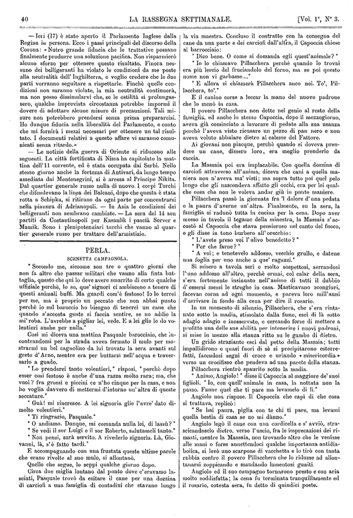
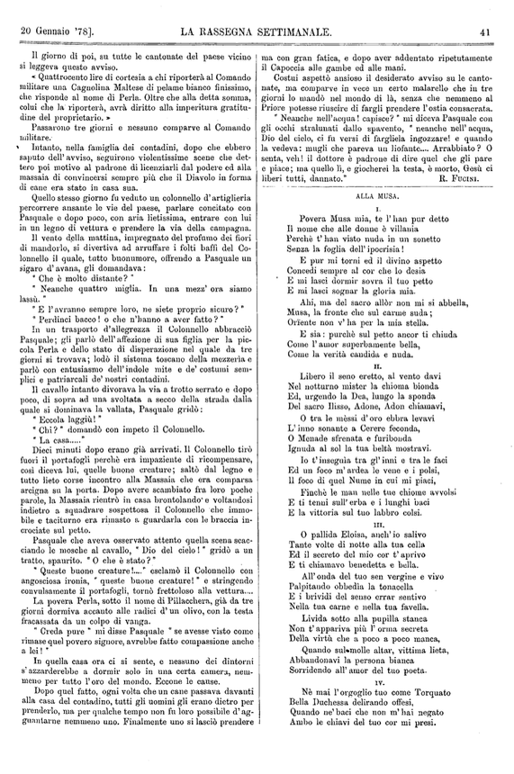
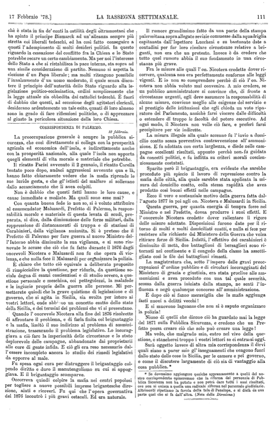
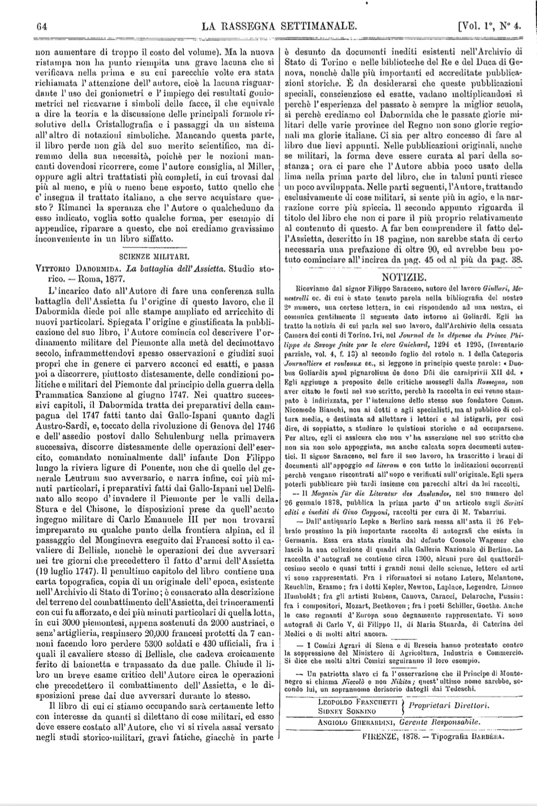
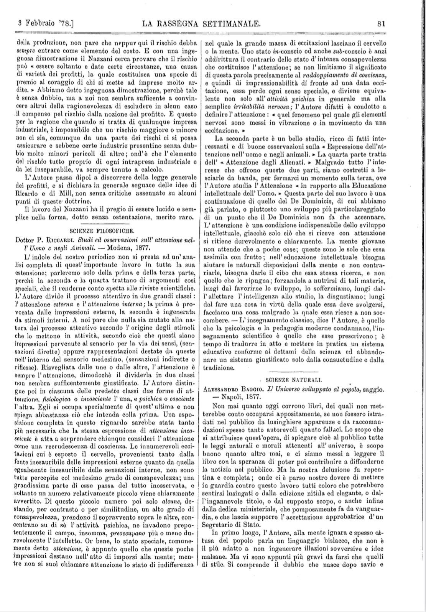
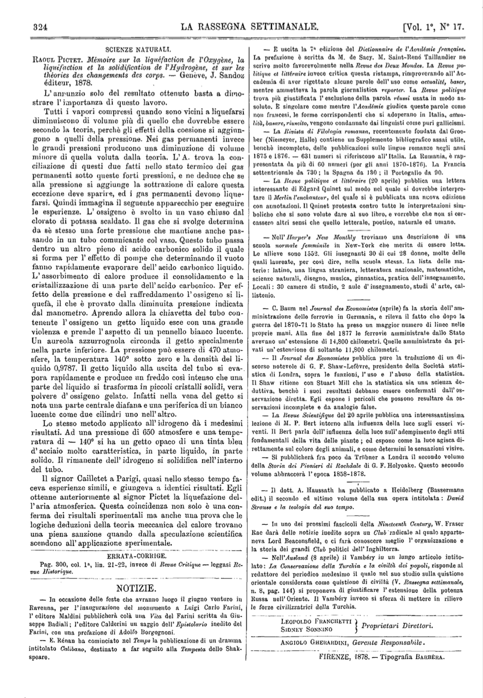
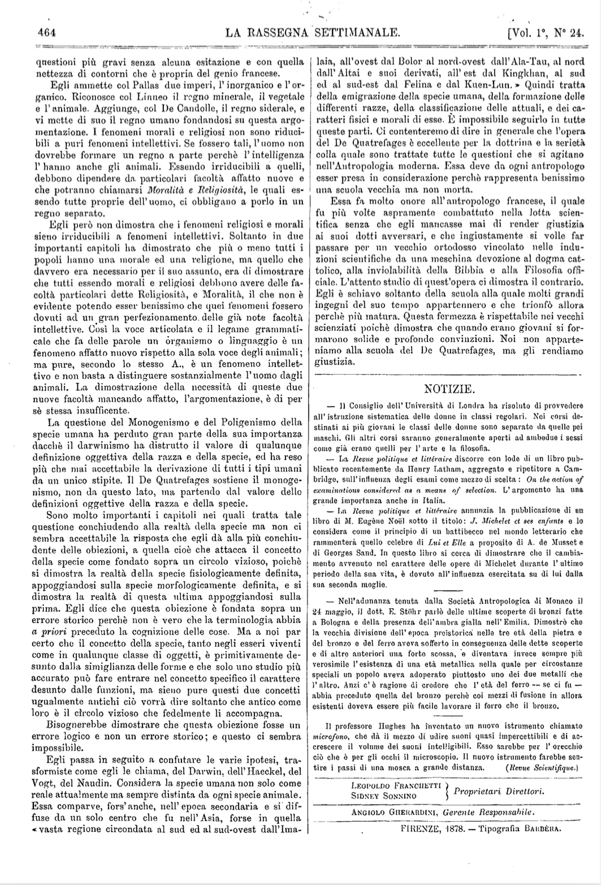

<!DOCTYPE HTML>
<html xmlns="http://www.w3.org/1999/xhtml" xmlns:tei="http://www.tei-c.org/ns/1.0">
   <head>
      <meta http-equiv="Content-Type" content="text/html; charset=UTF-8">
      <link href="stile.css" rel="stylesheet" type="text/css"><script src="https://ajax.googleapis.com/ajax/libs/jquery/3.5.1/jquery.js"></script><script type="text/javascript" src="bottoni.js"></script></head>
</html><body xmlns="http://www.w3.org/1999/xhtml" xmlns:tei="http://www.tei-c.org/ns/1.0">
   <nav>
      <ul>
         <li class="text"><a href="#descr">
               Descrizione rivista
               </a></li>
         <li class="text"><a href="#pg4041">
               Perla
               </a></li>
         <li class="text"><a href="#pg111">
               Corrispondenza di Palermo
               </a></li>
         <li class="text"><a href="#pg64">
               Sezione bibliografia
               </a></li>
         <li class="text"><a href="#pg324">
               Sezione notizie
               </a></li>
      </ul>
   </nav>
   <div class="background-section"></div>
   <section id="descr">
      <div class="infTitle">
         <div class="sin">
            <p>Il titolo della rivista: <br><span id="test">La rassegna settimanale<br>di politica, scienza, lettere ed arti</span></p>
         </div>
         <div class="dest">
            <p>Gli autori: <br><span id="test"> Sydney Sonnino </span><br><span id="test"> Leopoldo Franchetti</span></p>
            <p><span id="test">Con il sostegno di: Pasquale Villari</span><br></p>
         </div>
      </div>
      <div class="cont">
         <div class="sini">
            <h2> Contenuti della rivista  </h2>
            <h3 class="titoli">
               Dove troviamo la rivista
               </h3>
            <p class="luoghi">Roma,  
               Lazio</p>
            <p class="luoghi">Archivio digitale della rassegna settimanale</p><br><h3 class="titoli">
               Cosa contiene
               </h3>
            <p class="titolo">
               Titolo:
               
               La Rassegna Settimanale
               1878
               </p>
            <p class="autori">
               Autori:
               
               Leopoldo
               Franchetti
               , 
               Sydney
               Sonnino
               </p>
            <p class="sommario">
               Sommario:
                La rivista tratta un insieme di temi tra cui: temi politici, 
               la povertà, la condizione contadina, l'istruzione, il lavoro delle donne e dei fanciulli,
               la questione del Mezzogiorno.
               </p><br><h3 class="titoli">
               Edizione
               </h3>
            <p class="edizione">Edizione digitale - 2024<br>Progetto coordinato dal professor Angelo Mario Del Grosso<br>e<br>Codificato da Stefania Parello</p>
         </div>
         <div class="destr">
            <h2> Descrizione fisica del manoscritto </h2>
            <h3 class="titoli">
               Descrizione generale</h3>
            <p class="descFisica">La rivista è suddivisa in nove volumi: 
               Il primo volume è formato da:  26 pagine. 
               Dal secondo volume all'ottavo volume è formato da:  25 pagine.
               Il nono volume è formato da:  4 pagine.
               <br><br>
               Descrizione materiale: <br>Fogli di carta stampata.</p>
            <p class="descFisica">
               Layout della rivista:
               
               
               La rivista in questione è un testo stampato che contiene dalle 60 alle 70 righe. 
               La rivista contiene delle indicazioni di responsabilità sui curatori e dirigenti dell'articolo.
               Ogni rivista è accompagnata dalla propria data di pubblicazione. 
               Vengono indicati anche i numeri delle pagine e il numero dell'articolo a cui si rifà
               sul volume.
               
               </p>
            <p></p><br><h3 class="titoli">
               Storico della rivista
               </h3>
            <p class="descFisica">
               Origine: <br>
               
               La rivista "La rassegna settimanale" viene sviluppato inizialmente a 
               Firenze in Toscana nei
               primi di gennaio del 1878;
               successivamente la sede viene trasferita a Roma
               nel 1879.
               
               </p>
            <p class="descFisica">
               Provenienza: <br>
               
               La rivista viene fondata da Sydney Sonnino e 
               Leopoldo Franchetti. La rivista tratta di temi che 
               spaziano ampiamente problemi economici, sociali e politici della nuova Italia e dell'Italia
               meridionale.
               Soprattuto l'obiettivo era quello di  render consapevole la società italiana che l'economia
               del Sud 
               doveva essere riequilibrata anche per porre fine al pericoloso malcontento delle masse
               contadine.
               
               
               </p>
         </div>
      </div>
   </section>
   <hr class="stile">
   <div id="butstyle">
      <div class="ragrbut"><button class="Off" id="Pers">Persone</button><button class="Off" id="Org">Organizzazioni</button><button class="Off" id="luoghi">Luoghi</button><button class="Off" id="Date">Date</button><button class="Off" id="opere">Opere</button><button class="Off" id="numeri">Numeri</button><button class="Off" id="citaz">Citazioni</button></div>
   </div>
   <hr class="stile">
   <section id="pg4041">
      <div>
         <h3> Perla (Vol. 1°, N° 3.)</h3>
         <div class="page">
            <div class="imgfolio"><map name="Pg_40"><area shape="poly" coords=" 138,410 184,409 186,418 139,419 " href="Pg_40_1"><area shape="poly" coords=" 107,423 214,423 215,432 108,433 " href="Pg_40_2"><area shape="poly" coords=" 44,437 294,437 294,446 52,446 " href="Pg_40_3"><area shape="poly" coords=" 28,448 291,448 289,456 29,455 " href="Pg_40_4"><area shape="poly" coords=" 29,460 292,460 291,467 31,467 " href="Pg_40_5"><area shape="poly" coords=" 29,472 291,470 291,479 31,478 " href="Pg_40_6"><area shape="poly" coords=" 30,483 291,482 291,490 31,490 " href="Pg_40_7"><area shape="poly" coords=" 30,495 291,493 290,502 31,501 " href="Pg_40_8"><area shape="poly" coords=" 30,506 290,505 289,512 31,513 " href="Pg_40_9"><area shape="poly" coords=" 31,518 291,517 290,523 33,523 " href="Pg_40_10"><area shape="poly" coords=" 31,527 290,527 290,533 31,534 " href="Pg_40_11"><area shape="poly" coords=" 30,538 144,538 141,544 31,545 " href="Pg_40_12"><area shape="poly" coords=" 45,548 289,549 289,556 45,556 " href="Pg_40_13"><area shape="poly" coords=" 29,561 289,560 288,568 29,567 " href="Pg_40_14"><area shape="poly" coords=" 29,572 291,572 290,580 29,579 " href="Pg_40_15"><area shape="poly" coords=" 31,585 288,583 288,591 29,591 " href="Pg_40_16"><area shape="poly" coords=" 29,595 94,595 94,600 29,602 " href="Pg_40_17"><area shape="poly" coords=" 44,606 290,607 289,612 50,612 " href="Pg_40_18"><area shape="poly" coords=" 29,618 291,617 291,623 30,623 " href="Pg_40_19"><area shape="poly" coords=" 29,629 290,629 290,635 31,635 " href="Pg_40_20"><area shape="poly" coords=" 29,640 291,640 290,647 29,646 " href="Pg_40_21"><area shape="poly" coords=" 29,651 78,650 77,657 29,657 " href="Pg_40_22"><area shape="poly" coords=" 43,662 291,660 289,669 52,669 " href="Pg_40_23"><area shape="poly" coords=" 30,672 110,673 108,679 30,680 " href="Pg_40_24"><area shape="poly" coords=" 43,685 159,683 158,692 51,691 " href="Pg_40_25"><area shape="poly" coords=" 43,695 292,695 287,702 47,702 " href="Pg_40_26"><area shape="poly" coords=" 44,707 291,706 287,714 48,713 " href="Pg_40_27"><area shape="poly" coords=" 45,719 290,720 290,727 51,726 " href="Pg_40_28"><area shape="poly" coords=" 29,731 150,730 145,735 31,737 " href="Pg_40_29"><area shape="poly" coords=" 43,741 291,741 291,749 43,748 " href="Pg_40_30"><area shape="poly" coords=" 29,752 224,753 224,760 30,758 " href="Pg_40_31"><area shape="poly" coords=" 43,763 258,764 258,771 44,770 " href="Pg_40_32"><area shape="poly" coords=" 44,774 289,774 289,783 44,782 " href="Pg_40_33"><area shape="poly" coords=" 29,786 291,786 291,792 31,793 " href="Pg_40_34"><area shape="poly" coords=" 29,797 292,797 291,804 30,805 " href="Pg_40_35"><area shape="poly" coords=" 299,58 562,57 563,65 300,67 " href="Pg_40_36"><area shape="poly" coords=" 302,71 564,69 563,78 302,78 " href="Pg_40_37"><area shape="poly" coords=" 300,81 367,82 368,86 302,89 " href="Pg_40_38"><area shape="poly" coords=" 314,92 563,92 551,97 320,98 " href="Pg_40_39"><area shape="poly" coords=" 315,102 563,101 563,110 322,108 " href="Pg_40_40"><area shape="poly" coords=" 300,116 565,113 560,121 302,123 " href="Pg_40_41"><area shape="poly" coords=" 300,126 417,124 416,131 300,133 " href="Pg_40_42"><area shape="poly" coords=" 314,136 561,137 561,144 321,143 " href="Pg_40_43"><area shape="poly" coords=" 300,148 363,148 358,155 300,155 " href="Pg_40_44"><area shape="poly" coords=" 313,159 566,159 563,164 315,166 " href="Pg_40_45"><area shape="poly" coords=" 299,172 395,171 396,177 301,179 " href="Pg_40_46"><area shape="poly" coords=" 313,182 561,181 561,188 314,189 " href="Pg_40_47"><area shape="poly" coords=" 300,192 562,192 562,199 301,200 " href="Pg_40_48"><area shape="poly" coords=" 298,206 564,204 563,211 300,213 " href="Pg_40_49"><area shape="poly" coords=" 299,218 564,215 562,222 301,223 " href="Pg_40_50"><area shape="poly" coords=" 299,227 531,225 529,232 301,234 " href="Pg_40_51"><area shape="poly" coords=" 314,237 562,236 562,245 313,243 " href="Pg_40_52"><area shape="poly" coords=" 300,248 564,250 563,255 301,257 " href="Pg_40_53"><area shape="poly" coords=" 299,259 332,261 331,265 300,265 " href="Pg_40_54"><area shape="poly" coords=" 313,414 564,415 561,425 322,423 " href="Pg_40_55"><area shape="poly" coords=" 299,425 492,427 485,433 301,433 " href="Pg_40_56"><area shape="poly" coords=" 315,438 565,438 560,446 316,444 " href="Pg_40_57"><area shape="poly" coords=" 299,449 561,450 561,456 301,455 " href="Pg_40_58"><area shape="poly" coords=" 299,462 564,461 562,467 300,468 " href="Pg_40_59"><area shape="poly" coords=" 300,473 562,472 562,478 300,479 " href="Pg_40_60"><area shape="poly" coords=" 299,483 563,482 563,490 300,490 " href="Pg_40_61"><area shape="poly" coords=" 300,494 522,494 520,501 300,501 " href="Pg_40_62"><area shape="poly" coords=" 314,506 562,504 560,511 316,511 " href="Pg_40_63"><area shape="poly" coords=" 300,516 561,515 561,522 301,524 " href="Pg_40_64"><area shape="poly" coords=" 301,528 563,528 561,536 301,536 " href="Pg_40_65"><area shape="poly" coords=" 300,541 560,537 561,547 301,548 " href="Pg_40_66"><area shape="poly" coords=" 298,551 559,552 559,558 301,558 " href="Pg_40_67"><area shape="poly" coords=" 313,563 562,563 562,570 315,568 " href="Pg_40_68"><area shape="poly" coords=" 299,570 564,574 558,581 299,579 " href="Pg_40_69"><area shape="poly" coords=" 300,583 563,585 559,592 300,591 " href="Pg_40_70"><area shape="poly" coords=" 300,595 564,595 562,604 301,602 " href="Pg_40_71"><area shape="poly" coords=" 313,607 508,607 509,613 314,615 " href="Pg_40_72"><area shape="poly" coords=" 312,618 564,619 561,624 315,623 " href="Pg_40_73"><area shape="poly" coords=" 300,630 566,629 561,636 299,637 " href="Pg_40_74"><area shape="poly" coords=" 300,643 526,641 523,647 301,650 " href="Pg_40_75"><area shape="poly" coords=" 313,653 561,650 562,657 313,658 " href="Pg_40_76"><area shape="poly" coords=" 299,663 391,661 392,667 299,670 " href="Pg_40_77"><area shape="poly" coords=" 315,673 561,673 561,681 319,680 " href="Pg_40_78"><area shape="poly" coords=" 299,686 477,683 473,691 300,692 " href="Pg_40_79"><area shape="poly" coords=" 315,697 561,696 561,701 315,704 " href="Pg_40_80"><area shape="poly" coords=" 299,708 562,706 560,715 300,716 " href="Pg_40_81"><area shape="poly" coords=" 300,721 562,719 562,726 301,725 " href="Pg_40_82"><area shape="poly" coords=" 299,731 561,729 561,737 299,738 " href="Pg_40_83"><area shape="poly" coords=" 300,743 562,741 562,749 301,749 " href="Pg_40_84"><area shape="poly" coords=" 300,753 562,752 562,758 300,759 " href="Pg_40_85"><area shape="poly" coords=" 299,764 519,763 519,769 300,769 " href="Pg_40_86"><area shape="poly" coords=" 313,776 561,776 561,782 314,783 " href="Pg_40_87"><area shape="poly" coords=" 299,788 560,787 561,794 302,794 " href="Pg_40_88"><area shape="poly" coords=" 299,798 527,800 527,803 299,803 " href="Pg_40_89"><area shape="poly" coords=" 299,660 391,662 392,673 296,671 " href="Pg_40_90"><area shape="poly" coords=" 313,670 564,671 563,682 316,681 " href="Pg_40_91"><area shape="poly" coords=" 297,682 478,683 478,691 296,694 " href="Pg_40_92"><area shape="poly" coords=" 313,694 565,692 565,701 313,705 " href="Pg_40_93"><area shape="poly" coords=" 298,704 562,703 565,715 296,717 " href="Pg_40_94"><area shape="poly" coords=" 297,717 564,718 564,728 297,725 " href="Pg_40_95"><area shape="poly" coords=" 295,726 566,728 566,738 296,737 " href="Pg_40_96"><area shape="poly" coords=" 296,740 562,739 562,750 297,750 " href="Pg_40_97"><area shape="poly" coords=" 297,752 566,748 562,763 295,762 " href="Pg_40_98"><area shape="poly" coords=" 297,761 522,765 522,771 296,773 " href="Pg_40_99"><area shape="poly" coords=" 311,774 563,773 563,784 312,781 " href="Pg_40_100"><area shape="poly" coords=" 298,785 562,784 561,794 296,794 " href="Pg_40_101"><area shape="poly" coords=" 297,796 530,796 531,806 302,809 " href="Pg_40_102"></map></div>
            <div class="textCont">
               <div class="newspaper" id="#Pg_40">PERLA. SCENETTA CAMPAGNOLA
                  <br><span class="lineNumber" id="line_1">1</span>
                  " Secondo me, siccome sono tre o quattro giorni che
                  
                  <br><span class="lineNumber" id="line_2">2</span>
                  non fa altro che passar militari che vanno alla finta bat-
                  
                  <br><span class="lineNumber" id="line_3">3</span>   
                  taglia, questo che qui lo deve avere smarrito di certo qualche
                  
                  <br><span class="lineNumber" id="line_4">4</span>  
                  
                  <div class="bot"><span class="persName">
                        <id>uffiziale</id></span></div> perchè, lo so, que' signori ci ambiscono a tenere di 
                  
                  <br><span class="lineNumber" id="line_5">5</span>    
                  questi animali buffi. Ma guardi com'è festoso! Io lo terrei
                  
                  <br><span class="lineNumber" id="line_6">6</span> 
                  per me, ma è proprio un peccato che non abbai punto
                  
                  <br><span class="lineNumber" id="line_7">7</span> 
                  perchè io sul baroccio ho bisogno di tenerci un cane che 
                  
                  <br><span class="lineNumber" id="line_8">8</span> 
                  quando s'accosta gente si faccia sentire, se no addio la
                  
                  <br><span class="lineNumber" id="line_9">9</span> 
                  mi' roba. L'avrebbe a pigliar lei, vede. E a lei glie lo do vo-
                  
                  <br><span class="lineNumber" id="line0_10">10</span> 
                  lentieri anche per nulla." 
                  
                  
                  <br><span class="lineNumber" id="line1_11">11</span> 
                  Così mi diceva una mattina 
                  <div class="bot"><span class="persName">
                        <id>Pasquale barocciaio</id></span></div>, che in-
                  
                  <br><span class="lineNumber" id="line2_12">12</span> 
                  contrandomi per la strada aveva fermato il mulo per mo-
                  
                  <br><span class="lineNumber" id="line3_13">13</span> 
                  strarmi un bel cagnolino da lui trovato la sera avanti sul
                  
                  <br><span class="lineNumber" id="line4_14">14</span> 
                  
                  <div class="bot"><span class="placeName">
                        <id>greto d'Arno</id></span></div>, mentre era per buttarsi nell'acqua e traver-
                  
                  <br><span class="lineNumber" id="line_15">15</span> 
                  sarlo a guado.
                   
                  <br><span class="lineNumber" id="line6_16">16</span> 
                  " Lo prenderei tanto volentieri, " risposi, "perchè dopo
                  
                  <br><span class="lineNumber" id="line7_17">17</span>   
                  esser così festoso è anche d'una razza molto rara; ma, che
                  
                  <br><span class="lineNumber" id="line8_18">18</span> 
                  vuoi? fra grossi e piccini ce n'ho cinque per la casa, e non
                  
                  <br><span class="lineNumber" id="line9_19">19</span> 
                  ho voglia davvero di mettermi d'intorno un'altra di queste 
                  
                  <br><span class="lineNumber" id="line0_20">20</span> 
                  seccature". 
                  
                  <br><span class="lineNumber" id="line1_21">21</span> 
                  " Guà! mi rincresce. A lei signoria glie l'avre' dato di-
                  
                  <br><span class="lineNumber" id="line2_22">22</span> 
                  molto volentieri."
                  
                  <br><span class="lineNumber" id="line3_23">23</span>
                  " Ti ringrazio, 
                  <div class="bot"><span class="persName">
                        <id>Pasquale</id></span></div>."
                  
                  <br><span class="lineNumber" id="line4_24">24</span>
                  " O andiamo. Dunque, mi comanda nulla lei, di lassù?"
                  
                  <br><span class="lineNumber" id="line5_25">25</span>   
                  " Se vedi il <abbr>sor</abbr> <span class="expan">signor</span> 
                  <div class="bot"><span class="persName">
                        <id>Luigi</id></span></div> e il <abbr>sor</abbr> <span class="expan">signor</span> 
                  <div class="bot"><span class="persName">
                        <id>Roberto</id></span></div>, salutameli tanto."
                  
                  <br><span class="lineNumber" id="line6_26">26</span> 
                  " Non pensi, sarà servito. A rivederlo 
                  <div class="bot"><span class="persName">
                        <id>signorìa</id></span></div>. Là, 
                  <div class="bot"><span class="persName">
                        <id>Gio-</id></span></div>
                  
                  <br><span class="lineNumber" id="line7_27">27</span> 
                  
                  <div class="bot"><span class="persName">
                        <id>vanni</id></span></div>, là, s'è fatto tardi."
                  
                  <br><span class="lineNumber" id="line8_28">28</span> 
                  E accompagnando con una frustata queste ultime parole
                  
                  <br><span class="lineNumber" id="line9_29">29</span> 
                  che erano rivolte al suo mulo, si allontanò.
                  
                  <br><span class="lineNumber" id="line0_30">30</span> 
                  Quello che segue, lo seppi qualche giorno dopo.
                  
                  <br><span class="lineNumber" id="line1_31">31</span>   
                  Circa due miglia lontano dal punto dove c'eravamo la-
                  
                  <br><span class="lineNumber" id="line2_32">32</span> 
                  sciati, 
                  <div class="bot"><span class="persName">
                        <id>Pasquale</id></span></div> trovò da esitare il cane per una dozzina
                  
                  <br><span class="lineNumber" id="line3_33">33</span>
                  di carciofi a una famiglia di contadini che stavano lungo  
                  
                   
                  <br><span class="lineNumber" id="line4_34">34</span>
                  la via maestra. Concluso il contratto con la consegna del
                  
                  <br><span class="lineNumber" id="line5_35">35</span>
                  cane da una parte e dei carciofi dall'altra, il 
                  <div class="bot"><span class="persName">
                        <id>Capoccia</id></span></div> chiese
                  
                  <br><span class="lineNumber" id="line6_36">36</span>
                  al 
                  <div class="bot"><span class="persName">
                        <id>barrocciao</id></span></div>: 
                  
                  <br><span class="lineNumber" id="line9_37">37</span>
                  "Dico bene. O come si domanda egli quest'animale?"
                  
                  <br><span class="lineNumber" id="line0_38">38</span>
                  "Io lo chiamavo 
                  <div class="bot"><span class="term"><span class="term tooltip" data-ref="#Pill">Pillacchera<span class="tooltip-content">Secondo la descrizione del testo, Pillacchera si riferise
                              all'epiteto che designa il personaggio del cane assegnando il soprannome di Pillacchera.
                              Il termine si riferisce a una macchia di fango, per indicare che il cane viene trovato
                              molto sporco, simile a una scopa utilizzata per pulire il forno.</span></span></span></div> perchè quando lo trovai
                  
                  <br><span class="lineNumber" id="line1_39">39</span>
                  era più lercio del fruciandolo del forno, ma se poi questo
                  
                  <br><span class="lineNumber" id="line2_40">40</span>
                  nome non vi garbasse...."
                  
                  <br><span class="lineNumber" id="line3_41">41</span>
                  " E allora si chiamerà 
                  <div class="bot"><span class="term"><span class="term tooltip" data-ref="#Pill">Pillacchera<span class="tooltip-content">Secondo la descrizione del testo, Pillacchera si riferise
                              all'epiteto che designa il personaggio del cane assegnando il soprannome di Pillacchera.
                              Il termine si riferisce a una macchia di fango, per indicare che il cane viene trovato
                              molto sporco, simile a una scopa utilizzata per pulire il forno.</span></span></span></div> anco noi. To', 
                  <div class="bot"><span class="term"><span class="term tooltip" data-ref="#Pill">Pil-<span class="tooltip-content">Secondo la descrizione del testo, Pillacchera si riferise
                              all'epiteto che designa il personaggio del cane assegnando il soprannome di Pillacchera.
                              Il termine si riferisce a una macchia di fango, per indicare che il cane viene trovato
                              molto sporco, simile a una scopa utilizzata per pulire il forno.</span></span></span></div>
                  
                  <br><span class="lineNumber" id="line4_42">42</span>
                  
                  <div class="bot"><span class="term"><span class="term tooltip" data-ref="#Pill">lacchera<span class="tooltip-content">Secondo la descrizione del testo, Pillacchera si riferise
                              all'epiteto che designa il personaggio del cane assegnando il soprannome di Pillacchera.
                              Il termine si riferisce a una macchia di fango, per indicare che il cane viene trovato
                              molto sporco, simile a una scopa utilizzata per pulire il forno.</span></span></span></div> , to'."
                  
                  <br><span class="lineNumber" id="line5_43">43</span>
                  E il canino corse a leccar la mano del nuovo padrone
                  
                  <br><span class="lineNumber" id="line6_44">44</span>
                  che lo menò in casa.
                  
                  <br><span class="lineNumber" id="line7_45">45</span>
                  Il povero 
                  <div class="bot"><span class="term"><span class="term tooltip" data-ref="#Pill">Pillacchera<span class="tooltip-content">Secondo la descrizione del testo, Pillacchera si riferise
                              all'epiteto che designa il personaggio del cane assegnando il soprannome di Pillacchera.
                              Il termine si riferisce a una macchia di fango, per indicare che il cane viene trovato
                              molto sporco, simile a una scopa utilizzata per pulire il forno.</span></span></span></div> non dette nel genio al resto della 
                  
                  <br><span class="lineNumber" id="line8_46">46</span>
                  famiglia, ed anche lo stesso 
                  <div class="bot"><span class="persName">
                        <id>Capoccia</id></span></div>, dopo il mezzogiorno,
                  
                  <br><span class="lineNumber" id="line9_47">47</span>
                  aveva già cominciato a lavorare di pedate alla sua usanza
                  
                  <br><span class="lineNumber" id="line0_48">48</span>
                  perchè l'aveva visto ricusare un pezzo di pan nero e non 
                  
                  <br><span class="lineNumber" id="line1_49">49</span>
                  aveva voluto abbaiare dietro al calesse del 
                  <div class="bot"><span class="persName">
                        <id>Fattore</id></span></div>
                  
                  <br><span class="lineNumber" id="line2_50">50</span>
                  Ai giovani non piacque, perchè quando si doveva pren-
                  
                  <br><span class="lineNumber" id="line3_51">51</span>
                  dere un cane, dissero loro, era meglio prenderlo da
                  
                  <br><span class="lineNumber" id="line4_52">52</span>
                  caccia.
                  
                  <br><span class="lineNumber" id="line5_53">53</span>
                  La 
                  <div class="bot"><span class="persName">
                        <id>Massaia</id></span></div> poi era implacabile. Con quella dozzina di 
                  
                  <br><span class="lineNumber" id="line6_54">54</span>
                  carciofi attraverso all'anima, diceva che cani a quella ma-
                  
                  <br><span class="lineNumber" id="line7_55">55</span>
                  niera non n'aveva ma' visti; ma sopra tutto poi quel pelo
                  
                  <br><span class="lineNumber" id="line8_56">56</span>
                  lungo che gli nascondeva affatto gli occhi, era per lei qualc-
                  
                  <br><span class="lineNumber" id="line9_57">57</span>
                  che cosa che non le voleva andar giù in punte maniere.
                  
                  <br><span class="lineNumber" id="line0_58">58</span>
                  
                  <div class="bot"><span class="term"><span class="term tooltip" data-ref="#Pill">Pillacchera<span class="tooltip-content">Secondo la descrizione del testo, Pillacchera si riferise
                              all'epiteto che designa il personaggio del cane assegnando il soprannome di Pillacchera.
                              Il termine si riferisce a una macchia di fango, per indicare che il cane viene trovato
                              molto sporco, simile a una scopa utilizzata per pulire il forno.</span></span></span></div> passò la giornata fra 'l dolore d'una pedata
                  
                  <br><span class="lineNumber" id="line1_59">59</span>
                  e la paura d'averne un'altra. Finalmente, su la sera, la 
                  
                  <br><span class="lineNumber" id="line2_60">60</span>
                  famiglia si radunò tutta in cucina per la cena. Dopo aver 
                  
                  <br><span class="lineNumber" id="line3_61">61</span>
                  messo in tavola il tegame della minestra, la 
                  <div class="bot"><span class="persName">
                        <id>Massaia</id></span></div> s'ac-
                  
                  <br><span class="lineNumber" id="line4_62">62</span>
                  costò al 
                  <div class="bot"><span class="persName">
                        <id>Capoccia</id></span></div> che stava pensieroso nel canto del fuoco, 
                  
                  <br><span class="lineNumber" id="line5_63">63</span>
                  e gli disse in tono burbero all'orecchio: 
                  
                  <br><span class="lineNumber" id="line6_64">64</span>
                  "L'avete preso voi l'ulivo benedetto?"
                  
                  <br><span class="lineNumber" id="line7_65">65</span>
                  "Per che farne?"
                  
                  <br><span class="lineNumber" id="line8_66">66</span>
                  "A voi; e tenetevelo addosso, vecchio grullo, e datene
                  
                  <br><span class="lineNumber" id="line9_67">67</span>
                  una foglia per uno anche a que' ragazzi."
                  
                  <br><span class="lineNumber" id="line0_68">68</span>
                  Si misero a tavola seri e molto sospettosi, serrandosi
                  
                  <br><span class="lineNumber" id="line1_69">69</span>
                  l'uno addosso all'altro, perchè ormai, col calar della sera, 
                  
                  <br><span class="lineNumber" id="line2_70">70</span>
                  s'era fortemente insinuato nell'animo di tutti il dubbio
                  
                  <br><span class="lineNumber" id="line3_71">71</span>
                  d'essersi messi le streghe in casa. Masticavano scongiuri, 
                  
                  <br><span class="lineNumber" id="line4_72">72</span>
                  facevan corna ad ogni momento, e pareva loro mill'anni 
                  
                  <br><span class="lineNumber" id="line5_73">73</span>
                  d'arrivare in fondo alla cena per dire il rosario.
                  
                  <br><span class="lineNumber" id="line6_74">74</span>
                  In un momento di silenzio, 
                  <div class="bot"><span class="term"><span class="term tooltip" data-ref="#Pill">Pillacchera<span class="tooltip-content">Secondo la descrizione del testo, Pillacchera si riferise
                              all'epiteto che designa il personaggio del cane assegnando il soprannome di Pillacchera.
                              Il termine si riferisce a una macchia di fango, per indicare che il cane viene trovato
                              molto sporco, simile a una scopa utilizzata per pulire il forno.</span></span></span></div>, che s'era rinta-
                  
                  <br><span class="lineNumber" id="line7_75">75</span>
                  nato sotto la madia, stimolato dalla fame, escì di là sotto
                  
                  <br><span class="lineNumber" id="line8_76">76</span>
                  adagio adagio e inosservato, e cercando forse di mettere a 
                  
                  <br><span class="lineNumber" id="line9_77">77</span>
                  profitto una delle sue abilità per intenerire i nuovi padroni, 
                  
                  <br><span class="lineNumber" id="line0_78">78</span>
                  si mise in mezzo alla stanza ritto su le gambe di dietro. 
                   
                  <br><span class="lineNumber" id="line1_79">79</span>
                  Un grido straziante escì dal petto della 
                  <div class="bot"><span class="persName">
                        <id>Massaia</id></span></div>; tutti
                  
                  <br><span class="lineNumber" id="line2_80">80</span>
                  impallidirono e quasi fuori di sè si precipitarono esterre-
                  
                  <br><span class="lineNumber" id="line3_81">81</span>
                  fatti, facendosi segni di croce e urlando "misericordia"
                  
                  <br><span class="lineNumber" id="line4_82">82</span>
                  verso un crocifisso che pendeva ad una parete della stanza. 
                  
                  <br><span class="lineNumber" id="line5_83">83</span>
                  
                  <div class="bot"><span class="term"><span class="term tooltip" data-ref="#Pill">Pillacchera<span class="tooltip-content">Secondo la descrizione del testo, Pillacchera si riferise
                              all'epiteto che designa il personaggio del cane assegnando il soprannome di Pillacchera.
                              Il termine si riferisce a una macchia di fango, per indicare che il cane viene trovato
                              molto sporco, simile a una scopa utilizzata per pulire il forno.</span></span></span></div> rientrò spaurito sotto la madia.
                  
                  <br><span class="lineNumber" id="line6_84">84</span>
                  " Animo, 
                  <div class="bot"><span class="persName">
                        <id>Angiolo</id></span></div>!" disse il 
                  <div class="bot"><span class="persName">
                        <id>Capoccia</id></span></div> al maggiore de'suoi
                  
                  <br><span class="lineNumber" id="line7_85">85</span>
                  figlioli. "Io, con quell'animale in casa, la nottata non la
                  
                  <br><span class="lineNumber" id="line8_86">86</span>
                  passo. Fanne quel che ti pare ma levamelo di lì."
                  
                  <br><span class="lineNumber" id="line9_87">87</span>
                  
                  <div class="bot"><span class="persName">
                        <id>Angiolo</id></span></div> non rispose. Il 
                  <div class="bot"><span class="persName">
                        <id>Capoccia</id></span></div> che capì di che cosa 
                  
                  <br><span class="lineNumber" id="line0_88">88</span>
                  si trattava, replicò:
                  
                  <br><span class="lineNumber" id="line1_89">89</span>
                  "Se hai paura, piglia con te chi ti pare, ma levami 
                  
                  <br><span class="lineNumber" id="line2_90">90</span>
                  quella bestia di casa se no mi dànno."
                  
                  <br><span class="lineNumber" id="line3_91">91</span>
                  
                  <div class="bot"><span class="persName">
                        <id>Angiolo</id></span></div> legò il cane con una cordicella e s’ avviò, stra-
                  
                  <br><span class="lineNumber" id="line4_92">92</span>
                  scicandoselo dietro, verso l’uscio, fra le imprecazioni dei ri-
                  
                  <br><span class="lineNumber" id="line5_93">93</span>
                  masti, mentre la 
                  <div class="bot"><span class="persName">
                        <id>Massaia</id></span></div>, non trovando altro che le venisse
                  
                  <br><span class="lineNumber" id="line6_94">94</span>
                  alle mani o forse annettendoci qualche importanza antidia­-
                  
                  <br><span class="lineNumber" id="line7_95">95</span>
                  bolica, si levò uno scarpone di vacchetta e lo tirò con tanta
                  
                  <br><span class="lineNumber" id="line8_96">96</span>
                  rabbia contro il povero 
                  <div class="bot"><span class="term"><span class="term tooltip" data-ref="#Pill">Pillacchera<span class="tooltip-content">Secondo la descrizione del testo, Pillacchera si riferise
                              all'epiteto che designa il personaggio del cane assegnando il soprannome di Pillacchera.
                              Il termine si riferisce a una macchia di fango, per indicare che il cane viene trovato
                              molto sporco, simile a una scopa utilizzata per pulire il forno.</span></span></span></div> che lo ridusse ad allon­-
                  
                  <br><span class="lineNumber" id="line9_97">97</span>
                  tanarsi zoppicando e mandando lamentosi guaiti.
                  
                  <br><span class="lineNumber" id="line0_98">98</span>
                  
                  <div class="bot"><span class="persName">
                        <id>Angiolo</id></span></div> ed il suo compagno tornarono presto e con aria
                  
                  <br><span class="lineNumber" id="line0_99">99</span>
                  molto soddisfatta; la cena fu terminata tranquillamente ed
                  
                  <br><span class="lineNumber" id="line0_100">100</span>
                  il rosario, cotesta sera, fu detto di quindici poste. 
                  </div>
            </div>
            <div class="imgfolio"><map name="Pg_41"><area shape="poly" coords=" 34,54 281,60 279,72 32,68 " href="Pg_41_1"><area shape="poly" coords=" 17,67 136,71 137,81 15,81 " href="Pg_41_2"><area shape="poly" coords=" 30,79 281,82 280,95 29,92 " href="Pg_41_3"><area shape="poly" coords=" 20,93 280,93 280,107 20,106 " href="Pg_41_4"><area shape="poly" coords=" 20,103 285,105 284,118 16,116 " href="Pg_41_5"><area shape="poly" coords=" 16,114 280,117 278,129 14,126 " href="Pg_41_6"><area shape="poly" coords=" 14,125 131,125 133,141 17,139 " href="Pg_41_7"><area shape="poly" coords=" 29,137 283,135 283,151 25,148 " href="Pg_41_8"><area shape="poly" coords=" 16,149 63,150 62,161 14,161 " href="Pg_41_9"><area shape="poly" coords=" 33,161 281,160 282,173 31,171 " href="Pg_41_10"><area shape="poly" coords=" 17,171 284,170 283,181 15,185 " href="Pg_41_11"><area shape="poly" coords=" 19,180 282,182 282,195 19,193 " href="Pg_41_12"><area shape="poly" coords=" 19,192 285,192 284,205 19,203 " href="Pg_41_13"><area shape="poly" coords=" 19,204 157,206 154,216 17,215 " href="Pg_41_14"><area shape="poly" coords=" 29,217 282,218 282,229 28,226 " href="Pg_41_15"><area shape="poly" coords=" 19,227 282,229 281,237 20,238 " href="Pg_41_16"><area shape="poly" coords=" 18,239 283,238 284,253 19,249 " href="Pg_41_17"><area shape="poly" coords=" 16,247 281,250 280,259 15,260 " href="Pg_41_18"><area shape="poly" coords=" 28,260 284,258 284,273 29,271 " href="Pg_41_19"><area shape="poly" coords=" 21,271 284,271 282,285 20,284 " href="Pg_41_20"><area shape="poly" coords=" 16,284 284,284 284,298 17,295 " href="Pg_41_21"><area shape="poly" coords=" 19,296 174,295 171,304 17,304 " href="Pg_41_22"><area shape="poly" coords=" 29,306 154,304 152,315 27,315 " href="Pg_41_23"><area shape="poly" coords=" 29,314 283,314 286,331 27,325 " href="Pg_41_24"><area shape="poly" coords=" 16,327 59,329 57,340 16,341 " href="Pg_41_25"><area shape="poly" coords=" 31,341 281,340 282,352 32,352 " href="Pg_41_26"><area shape="poly" coords=" 28,352 265,352 264,361 25,362 " href="Pg_41_27"><area shape="poly" coords=" 25,360 285,360 285,372 25,372 " href="Pg_41_28"><area shape="poly" coords=" 19,371 283,373 284,385 19,385 " href="Pg_41_29"><area shape="poly" coords=" 16,382 283,388 283,394 16,394 " href="Pg_41_30"><area shape="poly" coords=" 18,396 283,396 282,408 20,409 " href="Pg_41_31"><area shape="poly" coords=" 20,407 282,408 280,419 19,419 " href="Pg_41_32"><area shape="poly" coords=" 19,419 194,419 194,429 12,431 " href="Pg_41_33"><area shape="poly" coords=" 32,429 285,427 283,438 31,439 " href="Pg_41_34"><area shape="poly" coords=" 19,441 285,441 283,453 19,452 " href="Pg_41_35"><area shape="poly" coords=" 17,450 232,452 234,465 19,463 " href="Pg_41_36"><area shape="poly" coords=" 29,463 121,463 121,473 27,475 " href="Pg_41_37"><area shape="poly" coords=" 36,475 236,472 237,484 35,485 " href="Pg_41_38"><area shape="poly" coords=" 33,486 96,488 98,498 30,496 " href="Pg_41_39"><area shape="poly" coords=" 33,494 285,493 282,507 31,506 " href="Pg_41_40"><area shape="poly" coords=" 19,506 282,507 283,517 18,517 " href="Pg_41_41"><area shape="poly" coords=" 19,519 286,518 283,532 18,532 " href="Pg_41_42"><area shape="poly" coords=" 19,530 284,529 285,541 20,542 " href="Pg_41_43"><area shape="poly" coords=" 19,543 284,541 284,553 19,553 " href="Pg_41_44"><area shape="poly" coords=" 21,553 286,551 286,563 22,564 " href="Pg_41_45"><area shape="poly" coords=" 18,563 286,565 284,576 19,574 " href="Pg_41_46"><area shape="poly" coords=" 20,576 287,575 284,593 16,586 " href="Pg_41_47"><area shape="poly" coords=" 19,586 109,589 111,600 19,598 " href="Pg_41_48"><area shape="poly" coords=" 28,596 286,596 284,608 29,606 " href="Pg_41_49"><area shape="poly" coords=" 20,608 284,608 284,620 20,619 " href="Pg_41_50"><area shape="poly" coords=" 17,617 181,619 180,629 17,629 " href="Pg_41_51"><area shape="poly" coords=" 30,627 285,627 286,640 31,640 " href="Pg_41_52"><area shape="poly" coords=" 17,640 288,641 283,654 19,654 " href="Pg_41_53"><area shape="poly" coords=" 21,653 285,654 286,665 22,664 " href="Pg_41_54"><area shape="poly" coords=" 32,665 289,663 290,678 33,675 " href="Pg_41_55"><area shape="poly" coords=" 17,676 288,675 286,689 18,687 " href="Pg_41_56"><area shape="poly" coords=" 18,688 178,688 176,701 18,698 " href="Pg_41_57"><area shape="poly" coords=" 34,697 286,697 285,707 37,710 " href="Pg_41_58"><area shape="poly" coords=" 21,708 289,709 284,721 21,719 " href="Pg_41_59"><area shape="poly" coords=" 15,719 64,720 66,734 16,732 " href="Pg_41_60"><area shape="poly" coords=" 26,732 289,728 289,742 25,742 " href="Pg_41_61"><area shape="poly" coords=" 18,739 288,743 288,756 16,752 " href="Pg_41_62"><area shape="poly" coords=" 19,750 254,753 254,763 17,763 " href="Pg_41_63"><area shape="poly" coords=" 34,763 290,765 290,776 35,776 " href="Pg_41_64"><area shape="poly" coords=" 17,774 288,775 289,785 20,787 " href="Pg_41_65"><area shape="poly" coords=" 11,785 291,786 286,797 11,795 " href="Pg_41_66"><area shape="poly" coords=" 15,796 290,799 290,812 21,814 " href="Pg_41_67"><area shape="poly" coords=" 287,59 551,60 552,73 287,72 " href="Pg_41_68"><area shape="poly" coords=" 286,71 462,71 460,81 287,83 " href="Pg_41_69"><area shape="poly" coords=" 300,84 553,83 552,91 302,95 " href="Pg_41_70"><area shape="poly" coords=" 286,95 551,95 552,103 288,103 " href="Pg_41_71"><area shape="poly" coords=" 289,107 554,103 556,118 287,117 " href="Pg_41_72"><area shape="poly" coords=" 289,114 553,116 552,129 289,127 " href="Pg_41_73"><area shape="poly" coords=" 300,125 551,126 551,138 296,140 " href="Pg_41_74"><area shape="poly" coords=" 285,137 555,137 556,152 285,150 " href="Pg_41_75"><area shape="poly" coords=" 286,149 558,149 555,161 290,160 " href="Pg_41_76"><area shape="poly" coords=" 289,162 553,160 553,172 289,173 " href="Pg_41_77"><area shape="poly" coords=" 289,174 554,172 554,182 286,183 " href="Pg_41_78"><area shape="poly" coords=" 288,184 553,183 552,199 286,195 " href="Pg_41_79"><area shape="poly" coords=" 286,193 393,195 392,206 291,210 " href="Pg_41_80"><area shape="poly" coords=" 480,194 542,196 542,208 480,210 " href="Pg_41_81"></map></div>
            <div class="textCont">
               <div class="newspaper" id="#Pg_41">
                  <br><span class="lineNumber" id="line_1">1</span>  
                  Il giorno di poi, su tutte le cantonate del paese vicino
                  
                  <br><span class="lineNumber" id="line_2">2</span>
                  si leggeva questo avviso.
                  
                  <br><span class="lineNumber" id="line_3">3</span>
                  "Quattrocento lire di cortesia a chi riporterà al 
                  <div class="bot"><span class="orgName">
                        <id>Comando</id></span></div>
                  
                  <br><span class="lineNumber" id="line_4">4</span> 
                  
                  <div class="bot"><span class="orgName">
                        <id>militare</id></span></div> una Cagnolina Maltese di pelame bianco finissimo
                  
                  <br><span class="lineNumber" id="line_5">5</span>
                  che risponde al nome di 
                  <div class="bot"><span class="persName">
                        <id>Perla</id></span></div>. Oltre che alla detta somma,
                  
                  <br><span class="lineNumber" id="line_6">6</span>
                  colui che la riporterà, avrà diritto alla imperitura gratitu-
                  
                  <br><span class="lineNumber" id="line_7">7</span> 
                  dine del proprietario."
                  
                  
                  <br><span class="lineNumber" id="line_8">8</span>
                  Passarono tre giorni e nessuno comparve al 
                  <div class="bot"><span class="orgName">
                        <id>Comando</id></span></div>
                  
                  <br><span class="lineNumber" id="line_9">9</span>
                  
                  <div class="bot"><span class="orgName">
                        <id>militare</id></span></div>.
                  
                  <br><span class="lineNumber" id="line0_10">10</span>
                  Intanto, nella famiglia dei contadini, dopo che ebbero
                  
                  <br><span class="lineNumber" id="line1_11">11</span>
                  saputo dell'avviso, seguirono violentissime scene che det-
                  
                  <br><span class="lineNumber" id="line2_12">12</span> 
                  tero poi motivo al padrone di licenziarsi dal podere ed alla
                  
                  <br><span class="lineNumber" id="line3_13">13</span>
                  
                  <div class="bot"><span class="persName">
                        <id>massaia</id></span></div> di convincersi sempre più che il Diavolo in forma
                  
                  <br><span class="lineNumber" id="line4_14">14</span>
                  di cane era stato in casa sua.
                  
                  
                  <br><span class="lineNumber" id="line5_15">15</span>                  
                  Quello stesso giorno fu veduto un 
                  <div class="bot"><span class="persName">
                        <id>Colonnello d'artiglieria</id></span></div> 
                  
                  <br><span class="lineNumber" id="line6_16">16</span>
                  percorre ansante le vie del paese, parlare concitato con
                  
                  <br><span class="lineNumber" id="line7_17">17</span>
                  
                  <div class="bot"><span class="persName">
                        <id>Pasquale</id></span></div> e dopo poco, con aria lietissima, entrare con lui
                  
                  <br><span class="lineNumber" id="line8_18">18</span>
                  in un legno di vettura e prendere la via della campagna.
                  
                  
                  <br><span class="lineNumber" id="line9_19">19</span>
                  Il vento della mattina, impregnato del profumo dei fiori   
                  
                  <br><span class="lineNumber" id="line0_20">20</span> 
                  di mandorlo, si divertiva ad arruffare i folti baffi del 
                  <div class="bot"><span class="persName">
                        <id>Co-</id></span></div>
                  
                  <br><span class="lineNumber" id="line1_21">21</span> 
                  
                  <div class="bot"><span class="persName">
                        <id>lonnello</id></span></div> il quale, tutto buonumore, offrendo a 
                  <div class="bot"><span class="persName">
                        <id>Pasquale</id></span></div> un
                  
                  <br><span class="lineNumber" id="line2_22">22</span>
                  un sigaro d'
                  <div class="bot"><span class="placeName">
                        <id>avana</id></span></div>, gli domandava:
                  
                  <br><span class="lineNumber" id="line3_23">23</span>
                  " Che è molto distante? "
                  
                  <br><span class="lineNumber" id="line4_24">24</span>
                  " Neanche quattro miglia. In una mezz'ora siamo 
                  
                  <br><span class="lineNumber" id="line5_25">25</span>
                  lassù. "
                  
                  <br><span class="lineNumber" id="line6_26">26</span> 
                  " E l'avranno sempre loro, ne siete proprio sicuro? "
                  
                  <br><span class="lineNumber" id="line7_27">27</span> 
                  " Perdinci bacco! o che n'hanno a aver fatto? "
                  
                  
                  <br><span class="lineNumber" id="line8_28">28</span>
                  In un trasporto d'allegrezza il 
                  <div class="bot"><span class="persName">
                        <id>Colonnello</id></span></div> abbracciò 
                  
                  <br><span class="lineNumber" id="line9_29">29</span> 
                  
                  <div class="bot"><span class="persName">
                        <id>Pasquale</id></span></div>; gli parlò dell'affezione di sua figlia per la pic-
                  
                  <br><span class="lineNumber" id="line0_30">30</span> 
                  cola 
                  <div class="bot"><span class="persName">
                        <id>Perla</id></span></div> e dello stato di disperazione nel quale da tre
                  
                  <br><span class="lineNumber" id="line1_31">31</span> 
                  giorni si trovava; lodò il sistema toscano della mezzerìa e
                  
                  <br><span class="lineNumber" id="line2_32">32</span>
                  parlò con entusiamo dell'indole mite e de' costumi sem-
                  
                  <br><span class="lineNumber" id="line3_33">33</span>
                  plici e patriarcali de' nostri contadini.
                  
                  
                  <br><span class="lineNumber" id="line4_34">34</span>
                  Il cavallo intanto divorava la via a tratto serrato e dopo
                  
                  <br><span class="lineNumber" id="line5_35">35</span>
                  poco, di sopra ad una svoltata a secco della strada dalla
                  
                  <br><span class="lineNumber" id="line6_36">36</span>
                  quale si dominava la vallata, 
                  <div class="bot"><span class="persName">
                        <id>Pasquale</id></span></div> gridò:
                  
                  <br><span class="lineNumber" id="line7_37">37</span>
                  " Eccola laggiù! "
                  
                  <br><span class="lineNumber" id="line8_38">38</span> 
                  " Chi? " domandò con impeto il 
                  <div class="bot"><span class="persName">
                        <id>Colonnello</id></span></div> 
                  
                  <br><span class="lineNumber" id="line9_39">39</span>
                  " La casa..... "
                  
                  
                  <br><span class="lineNumber" id="line0_40">40</span>
                  Dieci minuti dopo erano già arrivati. Il 
                  <div class="bot"><span class="persName">
                        <id>Colonnello</id></span></div> tirò  
                  
                  <br><span class="lineNumber" id="line1_41">41</span>    
                  fuori il portafogli perché era impaziente di ricompensare, 
                  
                  <br><span class="lineNumber" id="line2_42">42</span>
                  così diceva lui, quelle buone creature; saltò dal legno e  
                  
                  <br><span class="lineNumber" id="line3_43">43</span> 
                  tutto lieto corse incontro alla 
                  <div class="bot"><span class="persName">
                        <id>Massaia</id></span></div> che era comparsa
                  
                  <br><span class="lineNumber" id="line4_44">44</span>
                  arcigna su la porta. Dopo aver scambiato fra loro poche
                  
                  <br><span class="lineNumber" id="line5_45">45</span>
                  parole, la 
                  <div class="bot"><span class="persName">
                        <id>Massaia</id></span></div> rientrò in casa brontolando e voltandosi
                  
                  <br><span class="lineNumber" id="line6_46">46</span> 
                  indietro a squadrare sospettosa il 
                  <div class="bot"><span class="persName">
                        <id>Colonnello</id></span></div> che immo-
                  
                  <br><span class="lineNumber" id="line7_47">47</span> 
                  bile e taciturno era rimasto a guardarla con le braccia in-
                  
                  <br><span class="lineNumber" id="line8_48">48</span>  
                  crociate sul petto.
                  
                  <br><span class="lineNumber" id="line9_49">49</span>
                  
                  <div class="bot"><span class="persName">
                        <id>Pasquale</id></span></div> che aveva osservato attento quella scena scac-
                  
                  <br><span class="lineNumber" id="line0_50">50</span>  
                  ciando le mosche al cavallo, " Dio del cielo! " gridò a un 
                  
                  <br><span class="lineNumber" id="line1_51">51</span>
                  tratto, spaurito. " O che è stato? "  
                  
                  <br><span class="lineNumber" id="line2_52">52</span>
                  " Queste buone creature!...." esclamò il 
                  <div class="bot"><span class="persName">
                        <id>Colonnello</id></span></div> con
                  
                  <br><span class="lineNumber" id="line3_53">53</span>
                  angosciosa ironia, " queste buone creature! " e stringendo
                  
                  <br><span class="lineNumber" id="line4_54">54</span>
                  convulsamente il portafogli, tornò frettoloso alla vettura....
                  
                  <br><span class="lineNumber" id="line5_55">55</span>
                  La povera 
                  <div class="bot"><span class="persName">
                        <id>Perla</id></span></div>, sotto il nome di 
                  <div class="bot"><span class="term"><span class="term tooltip" data-ref="#Pill">Pillacchera<span class="tooltip-content">Secondo la descrizione del testo, Pillacchera si riferise
                              all'epiteto che designa il personaggio del cane assegnando il soprannome di Pillacchera.
                              Il termine si riferisce a una macchia di fango, per indicare che il cane viene trovato
                              molto sporco, simile a una scopa utilizzata per pulire il forno.</span></span></span></div>, già da tre
                  
                  <br><span class="lineNumber" id="line6_56">56</span>
                  giorni dormiva accanto alle radici d'un olivo, con la testa
                  
                  <br><span class="lineNumber" id="line7_57">57</span>
                  fracassata da un colpo di vanga.
                  
                  <br><span class="lineNumber" id="line8_58">58</span>
                  " Creda pure " mi disse 
                  <div class="bot"><span class="persName">
                        <id>Pasquale</id></span></div> "se avesse visto come
                  
                  <br><span class="lineNumber" id="line9_59">59</span>
                  rimase quel povero signore, avrebbe fatto compassione anche
                  
                  <br><span class="lineNumber" id="line0_60">60</span>
                  a lei! " 
                  
                  <br><span class="lineNumber" id="line1_61">61</span>
                  In quella casa ora ci si sente, e nessuno dei dintorni
                  
                  <br><span class="lineNumber" id="line2_62">62</span>
                  s'azzarderebbe a dormir solo in una certa camera, nem-
                  
                  <br><span class="lineNumber" id="line3_63">63</span>
                  meno per tutto l'oro del mondo. Eccone le cause.
                  
                  <br><span class="lineNumber" id="line4_64">64</span>
                  Dopo quel fatto, ogni volta che un cane passava davanti
                  
                  <br><span class="lineNumber" id="line5_65">65</span>
                  alla casa del contadino, tutti gli uomini gli erano dietro per
                  
                  <br><span class="lineNumber" id="line6_66">66</span>
                  prenderlo, ma per qualche tempo non fu loro possibile d'ag-
                  
                  <br><span class="lineNumber" id="line7_67">67</span>
                  guantarne nemmeno uno. Finalmente uno si lasciò prendere
                  
                   
                  <br><span class="lineNumber" id="line8_68">68</span>
                  ma con gran fatica, e dopo aver addentato ripetutamente
                  
                  <br><span class="lineNumber" id="line9_69">69</span>
                  il 
                  <div class="bot"><span class="persName">
                        <id>Capoccia</id></span></div> alle gambe ed alle mani.
                  
                  <br><span class="lineNumber" id="line0_70">70</span>
                  Costui aspettò ansioso il desiderato avviso su le canto-
                  
                  <br><span class="lineNumber" id="line1_71">71</span>
                  nate, ma comparve in vece un certo malarello che in tre
                  
                  <br><span class="lineNumber" id="line2_72">72</span>
                  giorni lo mandò nel mondo di là, senza che nemmeno al
                  
                  <br><span class="lineNumber" id="line3_73">73</span>
                  
                  <div class="bot"><span class="persName">
                        <id>Priore</id></span></div> potesse riuscire di fargli prendere l’ostia consacrata.
                   
                  <br><span class="lineNumber" id="line4_74">74</span>
                  " Neanche nell’acqua! capisce? ” mi diceva 
                  <div class="bot"><span class="persName">
                        <id>Pasquale</id></span></div> con
                  
                  <br><span class="lineNumber" id="line5_75">75</span>
                  gli occhi stralunati dallo spavento, “ neanche nell’ acqua,
                  
                  <br><span class="lineNumber" id="line6_76">76</span>
                  Dio del cielo, ci fu versi di fargliela ingozzare! e quando
                  
                  <br><span class="lineNumber" id="line7_77">77</span>
                  la vedeva: mugli che pareva un liofante.... Arrabbiato? O
                  
                  <br><span class="lineNumber" id="line8_78">78</span>
                  senta, veh! il 
                  <div class="bot"><span class="persName">
                        <id>dottore</id></span></div> è padrone di dire quel che gli pare
                  
                  <br><span class="lineNumber" id="line9_79">79</span>
                  e piace; ma quello lì, e giocherei la testa, è morto, Gesù ci
                  
                  <br><span class="lineNumber" id="line0_80">80</span>
                  liberi tutti, dannato.”
                  
                  <br><span class="lineNumber" id="line1_81">81</span>
                   
                  
                  <div class="bot"><span class="persName">
                        <id>
                           R.
                           Fucini.
                           </id></span></div>
                  
                  </div>
            </div>
         </div>
      </div>
   </section>
   <section id="pg111">
      <div>
         <h3>Corrispondenza di Palermo (Vol. 1°, N° 7.)</h3>
         <div class="page">
            <div class="imgfolio"><map name="Pg_111"><area shape="poly" coords=" 76,256 207,255 207,261 78,262 " href="Pg_111_1"><area shape="poly" coords=" 219,264 258,264 258,271 218,270 " href="Pg_111_2"><area shape="poly" coords=" 28,274 270,273 270,284 28,282 " href="Pg_111_3"><area shape="poly" coords=" 14,287 273,286 272,293 14,292 " href="Pg_111_4"><area shape="poly" coords=" 14,298 271,298 272,305 15,303 " href="Pg_111_5"><area shape="poly" coords=" 14,310 270,309 271,316 14,314 " href="Pg_111_6"><area shape="poly" coords=" 16,321 265,320 265,326 16,326 " href="Pg_111_7"><area shape="poly" coords=" 26,332 271,330 271,337 27,338 " href="Pg_111_8"><area shape="poly" coords=" 15,342 271,343 270,347 16,347 " href="Pg_111_9"><area shape="poly" coords=" 13,353 271,354 271,360 15,361 " href="Pg_111_10"><area shape="poly" coords=" 12,365 272,365 271,373 13,370 " href="Pg_111_11"><area shape="poly" coords=" 14,376 187,375 187,381 14,381 " href="Pg_111_12"><area shape="poly" coords=" 28,386 270,385 272,393 28,393 " href="Pg_111_13"><area shape="poly" coords=" 14,398 252,396 251,403 12,404 " href="Pg_111_14"><area shape="poly" coords=" 27,410 271,409 271,413 28,413 " href="Pg_111_15"><area shape="poly" coords=" 15,420 271,418 270,426 14,428 " href="Pg_111_16"><area shape="poly" coords=" 11,431 269,429 269,435 13,436 " href="Pg_111_17"><area shape="poly" coords=" 12,443 270,440 270,446 13,448 " href="Pg_111_18"><area shape="poly" coords=" 12,454 271,451 271,459 11,459 " href="Pg_111_19"><area shape="poly" coords=" 13,463 270,461 270,470 12,470 " href="Pg_111_20"><area shape="poly" coords=" 10,474 271,472 270,482 12,481 " href="Pg_111_21"><area shape="poly" coords=" 12,486 270,484 270,493 12,493 " href="Pg_111_22"><area shape="poly" coords=" 13,500 270,495 271,504 13,504 " href="Pg_111_23"><area shape="poly" coords=" 12,510 271,508 269,514 12,517 " href="Pg_111_24"><area shape="poly" coords=" 10,521 269,519 269,525 13,526 " href="Pg_111_25"><area shape="poly" coords=" 24,530 269,528 270,538 25,537 " href="Pg_111_26"><area shape="poly" coords=" 12,542 269,541 269,548 13,548 " href="Pg_111_27"><area shape="poly" coords=" 13,554 268,551 268,558 13,559 " href="Pg_111_28"><area shape="poly" coords=" 11,564 270,560 269,570 12,570 " href="Pg_111_29"><area shape="poly" coords=" 12,575 269,573 269,581 13,582 " href="Pg_111_30"><area shape="poly" coords=" 13,588 269,584 268,592 14,594 " href="Pg_111_31"><area shape="poly" coords=" 12,598 271,595 269,603 13,604 " href="Pg_111_32"><area shape="poly" coords=" 11,611 271,607 269,614 12,615 " href="Pg_111_33"><area shape="poly" coords=" 12,620 268,618 268,623 13,627 " href="Pg_111_34"><area shape="poly" coords=" 25,632 269,630 268,636 26,637 " href="Pg_111_35"><area shape="poly" coords=" 13,642 270,640 269,648 13,647 " href="Pg_111_36"><area shape="poly" coords=" 11,654 268,652 268,659 10,659 " href="Pg_111_37"><area shape="poly" coords=" 10,664 270,661 269,671 11,670 " href="Pg_111_38"><area shape="poly" coords=" 10,676 269,674 268,682 10,682 " href="Pg_111_39"><area shape="poly" coords=" 10,686 269,684 269,691 11,692 " href="Pg_111_40"><area shape="poly" coords=" 11,697 268,695 268,703 10,703 " href="Pg_111_41"><area shape="poly" coords=" 10,707 270,707 269,716 9,716 " href="Pg_111_42"><area shape="poly" coords=" 10,719 102,719 103,727 10,727 " href="Pg_111_43"><area shape="poly" coords=" 21,731 269,728 268,737 22,737 " href="Pg_111_44"><area shape="poly" coords=" 9,742 269,742 270,751 10,750 " href="Pg_111_45"><area shape="poly" coords=" 8,753 175,753 175,760 8,759 " href="Pg_111_46"><area shape="poly" coords=" 21,763 269,762 268,769 22,769 " href="Pg_111_47"><area shape="poly" coords=" 7,774 270,772 269,782 9,782 " href="Pg_111_48"><area shape="poly" coords=" 8,785 269,786 269,796 8,791 " href="Pg_111_49"><area shape="poly" coords=" 7,796 257,798 259,806 7,803 " href="Pg_111_50"><area shape="poly" coords=" 291,60 538,59 538,67 293,68 " href="Pg_111_51"><area shape="poly" coords=" 279,73 540,71 540,79 279,80 " href="Pg_111_52"><area shape="poly" coords=" 279,84 539,82 540,91 279,91 " href="Pg_111_53"><area shape="poly" coords=" 279,96 538,94 538,102 278,102 " href="Pg_111_54"><area shape="poly" coords=" 279,107 540,105 539,111 278,111 " href="Pg_111_55"><area shape="poly" coords=" 279,116 538,115 537,124 280,123 " href="Pg_111_56"><area shape="poly" coords=" 279,127 359,127 359,134 279,135 " href="Pg_111_57"><area shape="poly" coords=" 292,138 538,136 538,145 292,144 " href="Pg_111_58"><area shape="poly" coords=" 279,150 539,148 539,156 279,156 " href="Pg_111_59"><area shape="poly" coords=" 279,161 538,160 539,167 280,169 " href="Pg_111_60"><area shape="poly" coords=" 279,173 539,171 538,179 279,179 " href="Pg_111_61"><area shape="poly" coords=" 279,184 539,182 540,190 279,190 " href="Pg_111_62"><area shape="poly" coords=" 279,195 540,192 539,202 280,202 " href="Pg_111_63"><area shape="poly" coords=" 279,206 540,205 540,212 279,212 " href="Pg_111_64"><area shape="poly" coords=" 279,216 540,215 540,224 279,223 " href="Pg_111_65"><area shape="poly" coords=" 279,227 540,226 540,235 279,235 " href="Pg_111_66"><area shape="poly" coords=" 278,238 541,236 540,245 278,246 " href="Pg_111_67"><area shape="poly" coords=" 278,249 540,248 540,256 279,258 " href="Pg_111_68"><area shape="poly" coords=" 277,260 410,260 410,267 279,268 " href="Pg_111_69"><area shape="poly" coords=" 293,271 539,269 541,280 293,278 " href="Pg_111_70"><area shape="poly" coords=" 280,282 542,282 540,292 280,292 " href="Pg_111_71"><area shape="poly" coords=" 280,294 540,295 538,302 279,302 " href="Pg_111_72"><area shape="poly" coords=" 279,306 541,305 540,313 280,314 " href="Pg_111_73"><area shape="poly" coords=" 278,318 542,316 538,324 281,325 " href="Pg_111_74"><area shape="poly" coords=" 280,328 376,327 376,334 280,337 " href="Pg_111_75"><area shape="poly" coords=" 293,339 540,338 540,347 295,346 " href="Pg_111_76"><area shape="poly" coords=" 280,350 542,350 541,358 280,358 " href="Pg_111_77"><area shape="poly" coords=" 280,362 540,361 541,368 282,368 " href="Pg_111_78"><area shape="poly" coords=" 280,373 541,372 540,379 280,378 " href="Pg_111_79"><area shape="poly" coords=" 279,383 472,383 472,390 279,389 " href="Pg_111_80"><area shape="poly" coords=" 293,393 540,392 540,402 293,400 " href="Pg_111_81"><area shape="poly" coords=" 278,403 541,404 540,412 280,412 " href="Pg_111_82"><area shape="poly" coords=" 293,416 540,414 542,423 295,422 " href="Pg_111_83"><area shape="poly" coords=" 279,425 542,425 542,435 279,434 " href="Pg_111_84"><area shape="poly" coords=" 278,436 542,437 541,445 279,445 " href="Pg_111_85"><area shape="poly" coords=" 279,448 542,448 540,458 279,456 " href="Pg_111_86"><area shape="poly" coords=" 279,460 540,460 539,467 279,466 " href="Pg_111_87"><area shape="poly" coords=" 278,471 541,470 541,479 279,479 " href="Pg_111_88"><area shape="poly" coords=" 277,482 541,484 541,490 278,490 " href="Pg_111_89"><area shape="poly" coords=" 277,493 541,494 542,501 277,499 " href="Pg_111_90"><area shape="poly" coords=" 278,505 542,506 539,512 278,513 " href="Pg_111_91"><area shape="poly" coords=" 277,517 463,517 463,523 278,524 " href="Pg_111_92"><area shape="poly" coords=" 291,525 540,525 540,534 292,534 " href="Pg_111_93"><area shape="poly" coords=" 278,538 540,537 540,544 279,545 " href="Pg_111_94"><area shape="poly" coords=" 278,548 540,547 539,557 279,555 " href="Pg_111_95"><area shape="poly" coords=" 277,559 540,560 540,569 278,567 " href="Pg_111_96"><area shape="poly" coords=" 276,571 540,571 540,579 276,578 " href="Pg_111_97"><area shape="poly" coords=" 277,582 528,582 527,591 276,589 " href="Pg_111_98"><area shape="poly" coords=" 290,594 541,592 540,601 291,601 " href="Pg_111_99"><area shape="poly" coords=" 278,604 404,604 404,611 279,612 " href="Pg_111_100"><area shape="poly" coords=" 290,617 539,616 539,622 291,624 " href="Pg_111_101"><area shape="poly" coords=" 276,626 329,627 328,633 279,635 " href="Pg_111_102"><area shape="poly" coords=" 290,637 539,637 538,645 291,644 " href="Pg_111_103"><area shape="poly" coords=" 277,648 539,648 539,657 276,657 " href="Pg_111_104"><area shape="poly" coords=" 276,660 522,660 522,668 276,667 " href="Pg_111_105"><area shape="poly" coords=" 290,671 539,670 538,678 291,678 " href="Pg_111_106"><area shape="poly" coords=" 276,683 540,682 540,689 275,691 " href="Pg_111_107"><area shape="poly" coords=" 289,693 538,693 540,701 291,701 " href="Pg_111_108"><area shape="poly" coords=" 276,704 538,704 539,712 277,714 " href="Pg_111_109"><area shape="poly" coords=" 275,716 541,716 542,725 276,723 " href="Pg_111_110"><area shape="poly" coords=" 276,727 540,728 539,736 278,736 " href="Pg_111_111"><area shape="poly" coords=" 276,740 349,738 349,746 277,748 " href="Pg_111_112"><area shape="poly" coords=" 271,749 535,747 537,802 275,800 " href="Pg_111_exp"></map></div>
            <div class="textCont">
               <div class="newspaper" id="#Pg_111">
                  CORRISPONDENZA DI 
                  <div class="bot"><span class="placeName">
                        <id>PALERMO</id></span></div>
                  
                  <div class="bot"><span class="date">
                        <id>12 febbraio</id></span></div>.
                  <br><span class="lineNumber" id="line_1">1</span>
                  La preoccupazione generale è sempre la pubblica si­-
                  
                  <br><span class="lineNumber" id="line_2">2</span>
                  curezza, che così direttamente si collega con la prosperità
                  
                  <br><span class="lineNumber" id="line_3">3</span>
                  agricola ed economica dell’ isola, e indirettamente anche
                  
                  <br><span class="lineNumber" id="line_4">4</span>
                  con la prosperità nazionale, alla quale l’isola non apporta
                  
                  <br><span class="lineNumber" id="line_5">5</span>
                  quegli elementi di vita morale e materiale che potrebbe.
                  
                  <br><span class="lineNumber" id="line_6">6</span>
                  Il ricatto Parisi avvenuto il 
                  <div class="bot"><span class="date">
                        <id>2 gennaio</id></span></div>, il ricatto Carella
                  
                  <br><span class="lineNumber" id="line_7">7</span>
                  tentato poco dopo, audaci aggressioni avvenute qua e là,
                  
                  <br><span class="lineNumber" id="line0_8">8</span>
                  hanno fatto chiaramente vedere che la 
                  <div class="bot"><span class="orgName">
                        <id>mafia</id></span></div> riprende le
                  
                  <br><span class="lineNumber" id="line1_9">9</span>
                  sue luride gesta, e che gl’ istinti del malfare si sollevano
                  
                  <br><span class="lineNumber" id="line2_10">10</span>
                  dallo accasciamento che li avea colpiti.
                  
                  <br><span class="lineNumber" id="line3_11">11</span>
                  Non è dubbio che questi fatti hanno le loro cause, e
                  
                  <br><span class="lineNumber" id="line4_12">12</span>
                  cause immediate e mediate. Ma quali sono esse mai?
                  
                  <br><span class="lineNumber" id="line5_13">13</span>
                  Con quanta buona fede io non so, si è voluto attribuire
                  
                  <br><span class="lineNumber" id="line6_14">14</span>
                  al commendator 
                  <div class="bot"><span class="persName">
                        <id>Malusardi, Prefetto</id></span></div> di 
                  <div class="bot"><span class="placeName">
                        <id>Palermo</id></span></div>, la respon­-
                  
                  <br><span class="lineNumber" id="line7_15">15</span>
                  sabilità morale e materiale di questa levata di scudi, pre­-
                  
                  <br><span class="lineNumber" id="line8_16">16</span>
                  parata, si dice, dalla diminuzione delle forze militari, dalla
                  
                  <br><span class="lineNumber" id="line9_17">17</span>
                  soppressione di distaccamenti di truppa e di stazioni di
                  
                  <br><span class="lineNumber" id="line0_18">18</span>
                  
                  <div class="bot"><span class="orgName">
                        <id>Carabinieri</id></span></div>, dalla vigilanza sminuita. Si è preteso che il
                  
                  <br><span class="lineNumber" id="line1_19">19</span>
                  
                  <div class="bot"><span class="persName">
                        <id>Prefetto</id></span></div> di 
                  <div class="bot"><span class="placeName">
                        <id>Palermo</id></span></div> per fare guerra al nuovo  Ministro del-
                  
                  <br><span class="lineNumber" id="line2_20">20</span>
                  l'Interno abbia diminuito la sua vigilanza, e si sono rin­-
                  
                  <br><span class="lineNumber" id="line3_21">21</span>
                  novate le accuse che ciò che fu fatto durante il 
                  <div class="bot"><span class="date">
                        <id>1876</id></span></div> dagli
                  
                  <br><span class="lineNumber" id="line4_22">22</span>
                  onorevoli 
                  <div class="bot"><span class="persName">
                        <id>Nicotera</id></span></div> e 
                  <div class="bot"><span class="persName">
                        <id>Malusardi</id></span></div> non fu che opera di vio­-
                  
                  <br><span class="lineNumber" id="line5_23">23</span>
                  lenza, e che nulla fece il 
                  <div class="bot"><span class="persName">
                        <id>Malusardi</id></span></div> per organizzare la 
                  <div class="bot"><span class="orgName">
                        <id>polizia</id></span></div>.
                  
                  <br><span class="lineNumber" id="line6_24">24</span>
                  È chiaro che tutto ciò equivale a deliberato proposito
                  
                  <br><span class="lineNumber" id="line7_25">25</span>
                  di rimpicciolire la questione, per ridurla, da questione so­-
                  
                  <br><span class="lineNumber" id="line8_26">26</span>
                  ciale degna di esami coscienziosi e di studio severo, a que­-
                  
                  <br><span class="lineNumber" id="line9_27">27</span>
                  stione personale e meschina, coi pettegolezzi, la malafede
                  
                  <br><span class="lineNumber" id="line0_28">28</span>
                  e le ingiurie proprie della guerra alle persone. Mi per­-
                  
                  <br><span class="lineNumber" id="line1_29">29</span>
                  metterete quindi che la grave questione di legislazione e di
                  
                  <br><span class="lineNumber" id="line2_30">30</span>
                  governo, che si agita in 
                  <div class="bot"><span class="placeName">
                        <id>Sicilia</id></span></div>, sia svolta per intero ai
                  
                  <br><span class="lineNumber" id="line3_31">31</span>
                  vostri lettori, onde abbino un concetto esatto dello stato
                  
                  <br><span class="lineNumber" id="line4_32">32</span>
                  della 
                  <div class="bot"><span class="placeName">
                        <id>Sicilia</id></span></div>, e dei termini dei problemi che vi si presentano.
                  
                  <br><span class="lineNumber" id="line5_33">33</span>
                  Quando 
                  <div class="bot"><span class="persName">
                        <id>l’onorevole Nicotera</id></span></div> alla fine del 
                  <div class="bot"><span class="date">
                        <id>1876</id></span></div> risolvette
                  
                  <br><span class="lineNumber" id="line6_34">34</span>
                  di affrontare il problema, e di farla finita col 
                  <div class="bot"><span class="term"><span class="term tooltip" data-ref="#brig">brigantaggio<span class="tooltip-content">Il brigantaggio fu un fenomeno di natura criminale, frutto dell'attività di bande
                              di malfattori che 
                              infestavano campagne o vie di comunicazione a scopo di rapina e omicidio. Tra i crimini,
                              particolarmente violenti, perpetrati dai 
                              briganti spiccano la grassazione, l'omicidio, l'abigeato, lo stupro, oltre che varie
                              forme di minaccia e angherie. 
                              Sebbene il fenomeno abbia origini remote e riguardi periodi storici e territori diversi,
                              nella storiografia italiana questo termine 
                              si riferisce generalmente alle bande armate presenti nel Mezzogiorno d'Italia e attive
                              nel primo decennio successivo alla proclamazione 
                              del Regno d'Italia.</span></span></span></div>
                  
                  <br><span class="lineNumber" id="line7_35">35</span>
                  e la 
                  <div class="bot"><span class="orgName">
                        <id>mafia</id></span></div>, limitò il suo indirizzo al problema di ammini-
                  
                  <br><span class="lineNumber" id="line8_36">36</span>
                  strazione, trascurando il problema legislativo. Lo incorag-
                  
                  <br><span class="lineNumber" id="line9_37">37</span>
                  giava a ciò fare la imperiosità delle circostanze e lo stato
                  
                  <br><span class="lineNumber" id="line0_38">38</span>
                  deplorevole delle campagne, abbandonate dai proprietari
                  
                  <br><span class="lineNumber" id="line1_39">39</span>
                  alle cure di gente infida. E ciò gli era reso necessario dal-
                  
                  <br><span class="lineNumber" id="line2_40">40</span>
                  l’ essere incompleto ancora lo studio dei rimedi legislativi
                  
                  <br><span class="lineNumber" id="line3_41">41</span>
                  da opporre al male.
                  
                  <br><span class="lineNumber" id="line4_42">42</span>
                  Fu spesa ogni cura per distruggere il 
                  <div class="bot"><span class="term"><span class="term tooltip" data-ref="#brig">brigantaggio<span class="tooltip-content">Il brigantaggio fu un fenomeno di natura criminale, frutto dell'attività di bande
                              di malfattori che 
                              infestavano campagne o vie di comunicazione a scopo di rapina e omicidio. Tra i crimini,
                              particolarmente violenti, perpetrati dai 
                              briganti spiccano la grassazione, l'omicidio, l'abigeato, lo stupro, oltre che varie
                              forme di minaccia e angherie. 
                              Sebbene il fenomeno abbia origini remote e riguardi periodi storici e territori diversi,
                              nella storiografia italiana questo termine 
                              si riferisce generalmente alle bande armate presenti nel Mezzogiorno d'Italia e attive
                              nel primo decennio successivo alla proclamazione 
                              del Regno d'Italia.</span></span></span></div> col­-
                  
                  <br><span class="lineNumber" id="line5_43">43</span>
                  pendo diritto e duro il manutengolismo su cui si appog­-
                  
                  <br><span class="lineNumber" id="line6_44">44</span>
                  giava. E il 
                  <div class="bot"><span class="term"><span class="term tooltip" data-ref="#brig">brigantaggio<span class="tooltip-content">Il brigantaggio fu un fenomeno di natura criminale, frutto dell'attività di bande
                              di malfattori che 
                              infestavano campagne o vie di comunicazione a scopo di rapina e omicidio. Tra i crimini,
                              particolarmente violenti, perpetrati dai 
                              briganti spiccano la grassazione, l'omicidio, l'abigeato, lo stupro, oltre che varie
                              forme di minaccia e angherie. 
                              Sebbene il fenomeno abbia origini remote e riguardi periodi storici e territori diversi,
                              nella storiografia italiana questo termine 
                              si riferisce generalmente alle bande armate presenti nel Mezzogiorno d'Italia e attive
                              nel primo decennio successivo alla proclamazione 
                              del Regno d'Italia.</span></span></span></div> scomparve.
                  
                  <br><span class="lineNumber" id="line7_45">45</span>
                  Occorreva quindi colpire la 
                  <div class="bot"><span class="orgName">
                        <id>mafia</id></span></div> nei centri popolosi
                  
                  <br><span class="lineNumber" id="line8_46">46</span>
                  per togliere a nuove possibili imprese brigantesche dire­-
                  
                  <br><span class="lineNumber" id="line9_47">47</span>
                  zione, aiuti e ricoveri. Fu qui che l’opera governativa
                  
                  <br><span class="lineNumber" id="line0_48">48</span>
                  del 
                  <div class="bot"><span class="date">
                        <id>1876</id></span></div> incontrò i più gravi ostacoli. Ed era naturale.
                  
                   
                  <br><span class="lineNumber" id="line1_49">49</span>
                  Il rumore grandissimo fatto da una parte della 
                  <div class="bot"><span class="orgName">
                        <id>stampa</id></span></div>
                  
                  <br><span class="lineNumber" id="line2_50">50</span>
                  
                  <div class="bot"><span class="orgName">
                        <id>palermitana</id></span></div> sopra allegate sevizie commesse dalla squadriglia
                  
                  <br><span class="lineNumber" id="line3_51">51</span>
                  capitanata dall'
                  <div class="bot"><span class="persName">
                        <id>Ispettore Lucchesi</id></span></div> e su bastonate date a      
                  
                  <br><span class="lineNumber" id="line4_52">52</span>
                  contadini per far loro rivelare circostanze relative a bri-
                  
                  <br><span class="lineNumber" id="line5_53">53</span>
                  ganti, non era che un pretesto. Invece è da credere che
                  
                  <br><span class="lineNumber" id="line6_54">54</span>
                  tutto quel rumore abbia il suo fondamento in una circo-
                  
                  <br><span class="lineNumber" id="line7_55">55</span>
                  stanza più che grave.
                  
                  <br><span class="lineNumber" id="line8_56">56</span>
                  Fra le misure alle quali l'<abbr>on.</abbr> <span class="expan">onorevole</span> 
                  <div class="bot"><span class="persName">
                        <id>Nicotera</id></span></div> credette dover ri- 
                  
                  <br><span class="lineNumber" id="line9_57">57</span>
                  correre, qualcuna non era perfettamente conforme alle leggi
                  
                  <br><span class="lineNumber" id="line0_58">58</span>
                  vigenti. E io non so comprendere perchè di ciò l'<abbr>on.</abbr> <span class="expan">onorevole</span> 
                  <div class="bot"><span class="persName">
                        <id>Ni-</id></span></div>
                  
                  <br><span class="lineNumber" id="line1_59">59</span>
                  
                  <div class="bot"><span class="persName">
                        <id>cotera</id></span></div> non abbia voluto mai convenire. A mio credere, se
                  
                  <br><span class="lineNumber" id="line2_60">60</span>
                  un pubblico amministrativo si convince che, di fronte a
                  
                  <br><span class="lineNumber" id="line3_61">61</span>
                  circostanze urgenti, egli deve assumere la responsabilità di
                  
                  <br><span class="lineNumber" id="line4_62">62</span>
                  alcune misure, conviene meglio alle esigenze del servizio e 
                  
                  <br><span class="lineNumber" id="line5_63">63</span>
                  al prestigio delle istituzioni che egli chieda un voto ripa- 
                  
                  <br><span class="lineNumber" id="line6_64">64</span>
                  ratore del 
                  <div class="bot"><span class="orgName">
                        <id>Parlamento</id></span></div>, anzichè farsi vincere dalle difficoltà
                  
                  <br><span class="lineNumber" id="line7_65">65</span>
                  o estendere di troppo le facoltà del potere esecutivo. Ad
                  
                  <br><span class="lineNumber" id="line8_66">66</span>
                  ogni modo, il 
                  <div class="bot"><span class="persName">
                        <id>Nicotera</id></span></div> non volle ciò fare, e preferì farsi
                  
                  <br><span class="lineNumber" id="line9_67">67</span>
                  precipitare per vie indirette.
                  
                  <br><span class="lineNumber" id="line0_68">68</span>
                  La misura illegale alla quale accenno fu l'invio a domi-
                  
                  <br><span class="lineNumber" id="line1_69">69</span>
                  cilio coatto senza preventiva contravvenzione all'ammoni-
                  
                  <br><span class="lineNumber" id="line2_70">70</span>
                  zione. E fu adottata con certa larghezza, e diede nelle cam- 
                  
                  <br><span class="lineNumber" id="line3_71">71</span>
                  pagne eccellenti risultati, appunto perchè non fu guidata
                  
                  <br><span class="lineNumber" id="line4_72">72</span>
                  da concetti politici, e fu inflitta su criteri morali coscien- 
                  
                  <br><span class="lineNumber" id="line5_73">73</span>
                  ziosamente costatati.
                  
                  <br><span class="lineNumber" id="line6_74">74</span>
                  Sparito però il 
                  <div class="bot"><span class="term"><span class="term tooltip" data-ref="#brig">brigantaggio<span class="tooltip-content">Il brigantaggio fu un fenomeno di natura criminale, frutto dell'attività di bande
                              di malfattori che 
                              infestavano campagne o vie di comunicazione a scopo di rapina e omicidio. Tra i crimini,
                              particolarmente violenti, perpetrati dai 
                              briganti spiccano la grassazione, l'omicidio, l'abigeato, lo stupro, oltre che varie
                              forme di minaccia e angherie. 
                              Sebbene il fenomeno abbia origini remote e riguardi periodi storici e territori diversi,
                              nella storiografia italiana questo termine 
                              si riferisce generalmente alle bande armate presenti nel Mezzogiorno d'Italia e attive
                              nel primo decennio successivo alla proclamazione 
                              del Regno d'Italia.</span></span></span></div>, era evidente che sarebbe
                  
                  <br><span class="lineNumber" id="line7_75">75</span>
                  proceduto più spiccio il lavoro di repressione contro la
                  
                  <br><span class="lineNumber" id="line8_76">76</span>
                  
                  <div class="bot"><span class="orgName">
                        <id>mafia</id></span></div> delle città, alla quale sarebbe stata applicata la mi- 
                  
                  <br><span class="lineNumber" id="line9_77">77</span>
                  sura del domicilio coatto, colla stessa rapidità che avea
                  
                  <br><span class="lineNumber" id="line0_78">78</span>
                  prodotto così buoni effetti nelle campagne.
                  
                  <br><span class="lineNumber" id="line1_79">79</span>
                  Ecco il vero e sostanziale motivo della guerra fatta dal-
                  
                  <br><span class="lineNumber" id="line2_80">80</span>
                  l' 
                  <div class="bot"><span class="date">
                        <id>agosto 1877</id></span></div> in poi agli <abbr>on.</abbr> <span class="expan">onorevoli</span> 
                  <div class="bot"><span class="persName">
                        <id>Nicotera</id></span></div> e 
                  <div class="bot"><span class="persName">
                        <id>Malusardi</id></span></div> in 
                  <div class="bot"><span class="placeName">
                        <id>Sicilia</id></span></div>.
                  
                  <br><span class="lineNumber" id="line3_81">81</span>
                  Questa guerra, per quanta energia di tempra fosse nel
                  
                  <br><span class="lineNumber" id="line4_82">82</span>
                  
                  <div class="bot"><span class="persName">
                        <id>Ministro</id></span></div> e nel 
                  <div class="bot"><span class="persName">
                        <id>Prefetto</id></span></div>, dovea produrre i suoi effetti. E
                  
                  <br><span class="lineNumber" id="line5_83">83</span>
                  
                  <div class="bot"><span class="persName">
                        <id>l'onorevole Nicotera</id></span></div> credette dover rallentare il rigore
                  
                  <br><span class="lineNumber" id="line6_84">84</span>
                  delle misure adottate. Disposizioni furono date per il ri- 
                  
                  <br><span class="lineNumber" id="line7_85">85</span>
                  torno di molti e molti domiciliati coatti, e nulla si fece per
                  
                  <br><span class="lineNumber" id="line8_86">86</span>
                  resistere alle richieste del 
                  <div class="bot"><span class="term"><span class="term tooltip" data-ref="#MinisteroGuerra">Ministero della Guerra<span class="tooltip-content">Il Ministero della guerra fu uno storico dicastero 
                              presente sin dall'unità d'Italia, nel governo Cavour. 
                              Gestiva le forze militari del Regio Esercito, mentre il Ministero della marina si
                              occupava della Regia Marina.</span></span></span></div> che volea
                  
                  <br><span class="lineNumber" id="line9_87">87</span>
                  ritirare forze di 
                  <div class="bot"><span class="placeName">
                        <id>Sicilia</id></span></div>. Infatti, l'effettivo dei 
                  <div class="bot"><span class="orgName">
                        <id>carabinieri</id></span></div> è
                  
                  <br><span class="lineNumber" id="line0_88">88</span>
                  diminuito di metà, due battaglioni di 
                  <div class="bot"><span class="orgName">
                        <id>bersaglieri</id></span></div> sono ri-
                  
                  <br><span class="lineNumber" id="line1_89">89</span>
                  tornati nel continente e il congedo della classe ha assotti-
                  
                  <br><span class="lineNumber" id="line2_90">90</span>
                  gliato così le file dei battaglioni rimasti.
                  
                  <br><span class="lineNumber" id="line3_91">91</span>
                  La 
                  <div class="bot"><span class="orgName">
                        <id>magistratura</id></span></div> che, sotto l'impero delle gravi preoc-
                  
                  <br><span class="lineNumber" id="line4_92">92</span>
                  cupazioni d'ordine pubblico e di circolari incoraggianti del
                  
                  <br><span class="lineNumber" id="line5_93">93</span>
                  
                  <div class="bot"><span class="orgName">
                        <id>Ministero di grazia e giustizia</id></span></div>, era stata proclive alle am-
                  
                  <br><span class="lineNumber" id="line6_94">94</span>
                  monizioni e avea proceduto con una tal quale severità,
                  
                  <br><span class="lineNumber" id="line7_95">95</span>
                  scossa dalla guerra iniziata dalla stampa, ne sentì l'in-
                  
                  <br><span class="lineNumber" id="line8_96">96</span>
                  fluenza e negò qualunque concorso all'amministrazione.
                  
                  <br><span class="lineNumber" id="line9_97">97</span>
                  E dopo ciò si fanno meraviglia che la 
                  <div class="bot"><span class="orgName">
                        <id>mafia</id></span></div> aggiunga
                  
                  <br><span class="lineNumber" id="line0_98">98</span>
                  fasti nuovi a delitti vecchi!
                  
                  <br><span class="lineNumber" id="line0_99">99</span>
                  E si muovono laguanze che non si è saputo organizzare
                  
                  <br><span class="lineNumber" id="line0_100">100</span>
                  la 
                  <div class="bot"><span class="orgName">
                        <id>polizia</id></span></div>!
                  
                  <br><span class="lineNumber" id="line0_101">101</span>
                  Niuno di quelli che dicono ciò ha guardato mai la legge 
                  
                  <br><span class="lineNumber" id="line0_102">102</span>
                  del 
                  <div class="bot"><span class="date">
                        <id>1871</id></span></div> sulla 
                  <div class="bot"><span class="orgName">
                        <id>Pubblica Sicurezza</id></span></div>, e credono che un 
                  <div class="bot"><span class="persName">
                        <id>Pre-</id></span></div>
                  
                  <br><span class="lineNumber" id="line0_103">103</span>
                  
                  <div class="bot"><span class="persName">
                        <id>fetto</id></span></div> possa creare ciò che solo può creare una legge!
                  
                  <br><span class="lineNumber" id="line0_104">104</span>
                  Ma vedo, che malgrado mio, entro nel vivo della que- 
                  
                  <br><span class="lineNumber" id="line0_105">105</span>
                  stione, e stancherei troppo i vostri lettori se ci entrassi oggi.
                                     
                  <br><span class="lineNumber" id="line0_106">106</span>
                  Sarà oggetto invece di altra mia corrispondenza il dirvi
                  
                  <br><span class="lineNumber" id="line0_107">107</span>
                  quali siano a parer mio gl'insegnamenti che vengono fuori
                  
                  <br><span class="lineNumber" id="line1_108">108</span>
                  dallo stato delle cose in 
                  <div class="bot"><span class="placeName">
                        <id>Sicilia</id></span></div>, per le camere e pel governo,
                  
                  <br><span class="lineNumber" id="line1_109">109</span>
                  e come il discutere largamente di ciò sia di vantaggio alla
                  
                  <br><span class="lineNumber" id="line1_110">110</span>
                  cosa pubblica. *
                  
                  <br><span class="lineNumber" id="line1_111">111</span>
                  * Se dovessimo aggiungere qualche apprezzamento a quelli del nostro 
                  corrispondente opineremmo che la riforma del personale di 
                  <div class="bot"><span class="orgName">
                        <id>Pubblica Sicurezza</id></span></div>
                  non ha potuto e non potrà dare tutti i suoi risultati,
                  ove non si unisca a quella una radicale riforma nel personale giudiziario.
                  Altrimenti ripetiamo la favola della tela di Penelope, e di disfà da una
                  parte quel che fa dall'altra. (Nota della Direzione.)
                  </div>
            </div>
         </div>
      </div>
   </section>
   <section id="pg64">
      <div>
         <h3>Scienze Militari (Vol. 1°, N° 4.)</h3>
         <div class="page">
            <div class="imgfolio"><map name="Pg_64"><area shape="poly" coords=" 238,521 398,521 399,535 240,536 " href="Pg_64_1"><area shape="poly" coords=" 68,541 569,544 568,565 74,563 " href="Pg_64_2"><area shape="poly" coords=" 93,566 563,564 563,581 96,583 " href="Pg_64_3"><area shape="poly" coords=" 94,587 570,589 570,606 94,606 " href="Pg_64_4"><area shape="poly" coords=" 66,608 568,611 567,631 70,629 " href="Pg_64_5"><area shape="poly" coords=" 66,633 569,634 568,648 70,647 " href="Pg_64_6"><area shape="poly" coords=" 69,656 569,654 568,670 70,670 " href="Pg_64_7"><area shape="poly" coords=" 69,680 567,679 567,692 70,693 " href="Pg_64_8"><area shape="poly" coords=" 70,699 568,699 567,713 70,712 " href="Pg_64_9"><area shape="poly" coords=" 70,721 570,719 568,734 71,735 " href="Pg_64_10"><area shape="poly" coords=" 71,743 567,741 569,756 70,759 " href="Pg_64_11"><area shape="poly" coords=" 69,764 569,760 569,777 68,780 " href="Pg_64_12"><area shape="poly" coords=" 69,784 567,783 567,800 69,800 " href="Pg_64_13"><area shape="poly" coords=" 70,801 569,804 570,819 69,820 " href="Pg_64_14"><area shape="poly" coords=" 69,826 569,826 569,843 70,841 " href="Pg_64_15"><area shape="poly" coords=" 69,848 571,848 570,862 71,864 " href="Pg_64_16"><area shape="poly" coords=" 72,869 570,867 570,883 70,884 " href="Pg_64_17"><area shape="poly" coords=" 70,892 570,890 571,905 71,906 " href="Pg_64_18"><area shape="poly" coords=" 70,914 569,911 569,927 71,928 " href="Pg_64_19"><area shape="poly" coords=" 71,934 569,934 569,949 70,948 " href="Pg_64_20"><area shape="poly" coords=" 69,954 569,955 568,970 70,969 " href="Pg_64_21"><area shape="poly" coords=" 70,977 569,977 568,991 71,991 " href="Pg_64_22"><area shape="poly" coords=" 68,999 570,997 569,1013 69,1012 " href="Pg_64_23"><area shape="poly" coords=" 68,1020 573,1017 573,1036 68,1033 " href="Pg_64_24"><area shape="poly" coords=" 65,1038 571,1040 569,1055 71,1053 " href="Pg_64_25"><area shape="poly" coords=" 67,1060 570,1060 570,1076 69,1075 " href="Pg_64_26"><area shape="poly" coords=" 71,1078 570,1077 568,1096 70,1096 " href="Pg_64_27"><area shape="poly" coords=" 72,1103 568,1102 568,1119 71,1122 " href="Pg_64_28"><area shape="poly" coords=" 71,1124 567,1121 567,1138 73,1139 " href="Pg_64_29"><area shape="poly" coords=" 70,1146 570,1145 570,1161 70,1160 " href="Pg_64_30"><area shape="poly" coords=" 70,1167 571,1168 570,1182 72,1184 " href="Pg_64_31"><area shape="poly" coords=" 69,1192 571,1189 570,1202 70,1203 " href="Pg_64_32"><area shape="poly" coords=" 71,1210 569,1207 569,1225 72,1226 " href="Pg_64_33"><area shape="poly" coords=" 72,1227 568,1226 568,1243 71,1245 " href="Pg_64_34"><area shape="poly" coords=" 71,1251 569,1248 569,1269 71,1266 " href="Pg_64_35"><area shape="poly" coords=" 65,1270 572,1273 571,1288 68,1288 " href="Pg_64_36"><area shape="poly" coords=" 68,1295 568,1294 569,1308 69,1308 " href="Pg_64_37"><area shape="poly" coords=" 71,1316 572,1312 571,1330 70,1331 " href="Pg_64_38"><area shape="poly" coords=" 70,1337 572,1335 572,1350 69,1353 " href="Pg_64_39"><area shape="poly" coords=" 71,1354 569,1353 569,1370 71,1372 " href="Pg_64_40"><area shape="poly" coords=" 68,1376 571,1375 569,1393 69,1393 " href="Pg_64_41"><area shape="poly" coords=" 69,1400 571,1399 570,1416 70,1418 " href="Pg_64_42"><area shape="poly" coords=" 67,1423 568,1422 567,1438 69,1436 " href="Pg_64_43"><area shape="poly" coords=" 96,1441 568,1443 569,1457 97,1457 " href="Pg_64_44"><area shape="poly" coords=" 67,1466 571,1463 569,1479 72,1482 " href="Pg_64_45"><area shape="poly" coords=" 73,1482 570,1479 569,1500 72,1502 " href="Pg_64_46"><area shape="poly" coords=" 69,1507 568,1505 568,1525 71,1523 " href="Pg_64_47"><area shape="poly" coords=" 581,99 1082,96 1082,114 583,116 " href="Pg_64_48"><area shape="poly" coords=" 582,120 1079,119 1080,137 583,137 " href="Pg_64_49"><area shape="poly" coords=" 583,141 1079,139 1078,159 583,158 " href="Pg_64_50"><area shape="poly" coords=" 584,163 1078,162 1079,179 583,180 " href="Pg_64_51"><area shape="poly" coords=" 582,187 1084,182 1085,204 583,207 " href="Pg_64_52"><area shape="poly" coords=" 581,207 1082,207 1084,227 580,230 " href="Pg_64_53"><area shape="poly" coords=" 580,230 1080,227 1080,246 582,246 " href="Pg_64_54"><area shape="poly" coords=" 579,249 1082,250 1083,267 581,268 " href="Pg_64_55"><area shape="poly" coords=" 579,274 1082,271 1083,288 581,289 " href="Pg_64_56"><area shape="poly" coords=" 580,292 1084,294 1083,310 581,310 " href="Pg_64_57"><area shape="poly" coords=" 580,316 1082,314 1081,330 581,331 " href="Pg_64_58"><area shape="poly" coords=" 579,336 1082,336 1083,352 580,352 " href="Pg_64_59"><area shape="poly" coords=" 582,357 1085,355 1083,373 581,374 " href="Pg_64_60"><area shape="poly" coords=" 581,380 1081,377 1082,392 583,393 " href="Pg_64_61"><area shape="poly" coords=" 581,400 1082,397 1082,415 582,417 " href="Pg_64_62"><area shape="poly" coords=" 579,422 1088,419 1086,436 582,439 " href="Pg_64_63"><area shape="poly" coords=" 583,439 1082,441 1082,458 583,460 " href="Pg_64_64"><area shape="poly" coords=" 580,463 1084,462 1083,480 583,481 " href="Pg_64_65"><area shape="poly" coords=" 579,484 1084,486 1081,503 580,502 " href="Pg_64_66"><area shape="poly" coords=" 580,508 1085,506 1084,523 583,523 " href="Pg_64_67"><area shape="poly" coords=" 579,525 1086,526 1084,547 585,550 " href="Pg_64_68"></map></div>
            <div class="textCont">
               <div class="newspaper" id="#Pg_64">SCIENZE MILITARI.
                  <br><span class="lineNumber" id="line_1">1</span>
                  
                  <div class="bot"><span class="term"><span class="term tooltip" data-ref="#Dabo">VITTORIO DABORMIDA<span class="tooltip-content">Vittorio Emanuele Dabormida (Torino, 22 novembre 1842 – Adua, 1º marzo 1896)
                              è stato un generale del Regio Esercito italiano, autore di una serie di pubblicazioni
                              relative all'arte militare, 
                              caduto nella battaglia di Adua.</span></span></span></div>. 
                  <div class="bot"><span class="term"><span class="term tooltip" data-ref="#Assi">La battaglia dell'Assietta<span class="tooltip-content">La battaglia dell'Assietta fu combattuta il 19 luglio 1747 
                              sulla cresta tra la Val Chisone e la Val di Susa (Piemonte). 
                              Tale battaglia fu un significativo episodio della guerra di successione austriaca,
                              
                              conflitto che sconvolse l'Europa della metà del Settecento.</span></span></span></div>. 
                  <div class="bot"><span class="orgName">
                        <id>Studio sto-</id></span></div>
                  
                  <br><span class="lineNumber" id="line_2">2</span>
                  
                  <div class="bot"><span class="orgName">
                        <id>rico</id></span></div>. -
                  <div class="bot"><span class="placeName">
                        <id>Roma</id></span></div>, 
                  <div class="bot"><span class="date">
                        <id>1877</id></span></div>.
                  
                  <br><span class="lineNumber" id="line_3">3</span>
                  L'incarico dato all'Autore di fare una conferenza sulla
                  
                  <br><span class="lineNumber" id="line_4">4</span>
                  battaglia dell'
                  <div class="bot"><span class="term"><span class="term tooltip" data-ref="#Assi">Assietta<span class="tooltip-content">La battaglia dell'Assietta fu combattuta il 19 luglio 1747 
                              sulla cresta tra la Val Chisone e la Val di Susa (Piemonte). 
                              Tale battaglia fu un significativo episodio della guerra di successione austriaca,
                              
                              conflitto che sconvolse l'Europa della metà del Settecento.</span></span></span></div> fu l'origine di questo lavoro, che il
                  
                  <br><span class="lineNumber" id="line_5">5</span>
                  
                  <div class="bot"><span class="term"><span class="term tooltip" data-ref="#Dabo">Dabormida<span class="tooltip-content">Vittorio Emanuele Dabormida (Torino, 22 novembre 1842 – Adua, 1º marzo 1896)
                              è stato un generale del Regio Esercito italiano, autore di una serie di pubblicazioni
                              relative all'arte militare, 
                              caduto nella battaglia di Adua.</span></span></span></div> diede poi alle stampe ampliato ed arricchito di 
                  
                  <br><span class="lineNumber" id="line_6">6</span>
                  nuovi particolari. Spiegata l'origine e giustificata la pubbli-
                  
                  <br><span class="lineNumber" id="line_7">7</span>
                  cazione del suo libro, l'Autore comincia col descrivere l'or-
                  
                  <br><span class="lineNumber" id="line_8">8</span>
                  dinamento militare del 
                  <div class="bot"><span class="placeName">
                        <id>Piemonte</id></span></div> alla metà del 
                  <div class="bot"><span class="date">
                        <id>decimottavo</id></span></div>
                  
                  <br><span class="lineNumber" id="line0_9">9</span>
                  
                  <div class="bot"><span class="date">
                        <id>secolo</id></span></div>, inframmettendovi spesso osservazioni e giudizi suoi
                  
                  <br><span class="lineNumber" id="line1_10">10</span>
                  propri che in genere ci parvero acconci ed esatti, e passa
                  
                  <br><span class="lineNumber" id="line2_11">11</span>
                  poi a discorrere, piuttosto distesamente, delle condizioni po-
                  
                  <br><span class="lineNumber" id="line3_12">12</span>
                  litiche e militari del 
                  <div class="bot"><span class="placeName">
                        <id>Piemonte</id></span></div> dal principio della guerra della
                  
                  <br><span class="lineNumber" id="line4_13">13</span>
                  
                  <div class="bot"><span class="title">
                        <id>Prammatica Sanzione</id></span></div> al 
                  <div class="bot"><span class="date">
                        <id>giugno 1747</id></span></div>. Nei quattro succes-
                  
                  <br><span class="lineNumber" id="line5_14">14</span>
                  sivi capitoli, il 
                  <div class="bot"><span class="term"><span class="term tooltip" data-ref="#Dabo">Dabormida<span class="tooltip-content">Vittorio Emanuele Dabormida (Torino, 22 novembre 1842 – Adua, 1º marzo 1896)
                              è stato un generale del Regio Esercito italiano, autore di una serie di pubblicazioni
                              relative all'arte militare, 
                              caduto nella battaglia di Adua.</span></span></span></div> tratta dei preparativi della cam-
                  
                  <br><span class="lineNumber" id="line6_15">15</span>
                  pagna del 
                  <div class="bot"><span class="date">
                        <id>1747</id></span></div> fatti tanto dai Gallo-Ispani quanto dagli
                  
                  <br><span class="lineNumber" id="line7_16">16</span>
                  Austro-Sardi, e, toccato della rivoluzione di 
                  <div class="bot"><span class="placeName">
                        <id>Genova</id></span></div> del 
                  <div class="bot"><span class="date">
                        <id>1746</id></span></div>
                  
                  <br><span class="lineNumber" id="line8_17">17</span>
                  e dell'assedio postovi dallo 
                  <div class="bot"><span class="persName">
                        <id>Schulenburg</id></span></div> nella primavera
                  
                  <br><span class="lineNumber" id="line9_18">18</span>
                  successiva, discorre distesamente delle operazioni dell'eser-
                  
                  <br><span class="lineNumber" id="line0_19">19</span>
                  cito, comandato nominalmente dall'infante 
                  <div class="bot"><span class="persName">
                        <id>Don Filippo</id></span></div>
                  
                  <br><span class="lineNumber" id="line1_20">20</span>
                  lungo la 
                  <div class="bot"><span class="placeName">
                        <id>riviera ligure di Ponente</id></span></div>, non che di quelle del 
                  <div class="bot"><span class="persName">
                        <id>ge-</id></span></div>
                  
                  <br><span class="lineNumber" id="line2_21">21</span>
                  
                  <div class="bot"><span class="persName">
                        <id>nerale Leutrum</id></span></div> suo avversario, e narra infine, coi più mi-
                  
                  <br><span class="lineNumber" id="line3_22">22</span>
                  nuti particolari, i preparativi fatti dai Gallo-Ispani nel 
                  <div class="bot"><span class="placeName">
                        <id>Delfi-</id></span></div>
                  
                  <br><span class="lineNumber" id="line4_23">23</span>
                  
                  <div class="bot"><span class="placeName">
                        <id>nato</id></span></div> allo scopo d'invadere il 
                  <div class="bot"><span class="placeName">
                        <id>Piemonte</id></span></div> per le valli della
                  
                  <br><span class="lineNumber" id="line5_24">24</span>
                  
                  <div class="bot"><span class="placeName">
                        <id>Stura</id></span></div> e del 
                  <div class="bot"><span class="placeName">
                        <id>Chisone</id></span></div>, le disposizioni prese da quell'acuto
                  
                  <br><span class="lineNumber" id="line6_25">25</span>
                  ingegno militare di 
                  <div class="bot"><span class="persName">
                        <id>Carlo Emanuele III</id></span></div> per non trovarsi
                  
                  <br><span class="lineNumber" id="line7_26">26</span>
                  impreparato su qualche punto della frontiera alpina, ed il
                  
                  <br><span class="lineNumber" id="line8_27">27</span>
                  passaggio del 
                  <div class="bot"><span class="placeName">
                        <id>Monginevra</id></span></div> eseguito dai Francesi sotto il 
                  <div class="bot"><span class="persName">
                        <id>ca-</id></span></div>
                  
                  <br><span class="lineNumber" id="line9_28">28</span>
                  
                  <div class="bot"><span class="persName">
                        <id>valiere</id></span></div> di 
                  <div class="bot"><span class="placeName">
                        <id>Bellisle</id></span></div>, nonchè le operazioni dei due avversari
                  
                  <br><span class="lineNumber" id="line0_29">29</span>
                  nei tre giorni che precedettero il fatto d'armi dell'
                  <div class="bot"><span class="term"><span class="term tooltip" data-ref="#Assi">Assietta<span class="tooltip-content">La battaglia dell'Assietta fu combattuta il 19 luglio 1747 
                              sulla cresta tra la Val Chisone e la Val di Susa (Piemonte). 
                              Tale battaglia fu un significativo episodio della guerra di successione austriaca,
                              
                              conflitto che sconvolse l'Europa della metà del Settecento.</span></span></span></div>
                  
                  <br><span class="lineNumber" id="line1_30">30</span>
                  (
                  <div class="bot"><span class="date">
                        <id>19 luglio 1747</id></span></div>). Il penultimo capitolo del libro contiene una
                  
                  <br><span class="lineNumber" id="line2_31">31</span>
                  carta topografica, copia di un originale dell'epoca, esistente
                  
                  <br><span class="lineNumber" id="line3_32">32</span>
                  nell'
                  <div class="bot"><span class="term"><span class="term tooltip" data-ref="#ArchTor">Archivio di Stato di Torino<span class="tooltip-content">L'Archivio di Stato di Torino raccoglie il complesso dei documenti dei membri di casa
                              Savoia, 
                              cui nel tempo si sono andati a sommare archivi di famiglie e personalità illustri,
                              archivi di associazioni, di industrie e 
                              la documentazione amministrativa prodotta dal Regno di Sardegna e dagli Uffici periferici
                              dello Stato italiano in Provincia di Torino. 
                              Questo importante patrimonio, custodito su circa 83 km lineari di scaffalature, rende
                              l'Archivio una ricchissima miniera di informazioni 
                              che permettono, agli storici e non solo, di spaziare su 1300 anni di storia del Piemonte,
                              dell'Italia e dell'Europa.</span></span></span></div>; è consacrato alla descrizione
                  
                  <br><span class="lineNumber" id="line4_33">33</span>
                  del terreno del combattimento dell'
                  <div class="bot"><span class="term"><span class="term tooltip" data-ref="#Assi">Assietta<span class="tooltip-content">La battaglia dell'Assietta fu combattuta il 19 luglio 1747 
                              sulla cresta tra la Val Chisone e la Val di Susa (Piemonte). 
                              Tale battaglia fu un significativo episodio della guerra di successione austriaca,
                              
                              conflitto che sconvolse l'Europa della metà del Settecento.</span></span></span></div>, dei trinceramenti
                  
                  <br><span class="lineNumber" id="line5_34">34</span>
                  con cui fu afforzato, e dei più minuti particolari di quella lotta,
                  
                  <br><span class="lineNumber" id="line6_35">35</span>
                  in cui 
                  <div class="bot"><span class="num">
                        <id>3000</id></span></div> piemontesi, appena sostenuti da 
                  <div class="bot"><span class="num">
                        <id>2000</id></span></div> austriaci, e 
                  
                  <br><span class="lineNumber" id="line7_36">36</span>
                  senz'artiglieria, respinsero 
                  <div class="bot"><span class="num">
                        <id>20,000 </id></span></div> francesi protetti da 
                  <div class="bot"><span class="num">
                        <id>7</id></span></div> can-
                  
                  <br><span class="lineNumber" id="line8_37">37</span>
                  noni facendo loro perdere 
                  <div class="bot"><span class="num">
                        <id>5300</id></span></div> soldati e 
                  <div class="bot"><span class="num">
                        <id>430</id></span></div> ufficiali, fra i
                  
                  <br><span class="lineNumber" id="line9_38">38</span>
                  quali il cavaliere stesso di 
                  <div class="bot"><span class="placeName">
                        <id>Bellisle</id></span></div>, che cadeva eroicamente
                  
                  <br><span class="lineNumber" id="line0_39">39</span>
                  ferito di baionetta e trapassato da due palle. Chiude il li-
                  
                  <br><span class="lineNumber" id="line1_40">40</span>
                  bro un breve esame critico dell'Autore circa le operazioni
                  
                  <br><span class="lineNumber" id="line2_41">41</span>
                  che precedettero il combattimento dell'
                  <div class="bot"><span class="term"><span class="term tooltip" data-ref="#Assi">Assietta<span class="tooltip-content">La battaglia dell'Assietta fu combattuta il 19 luglio 1747 
                              sulla cresta tra la Val Chisone e la Val di Susa (Piemonte). 
                              Tale battaglia fu un significativo episodio della guerra di successione austriaca,
                              
                              conflitto che sconvolse l'Europa della metà del Settecento.</span></span></span></div>, e le di-
                  
                  <br><span class="lineNumber" id="line3_42">42</span>
                  sposizioni prese dai due avversari durante lo stesso.
                  
                  <br><span class="lineNumber" id="line4_43">43</span>
                  Il libro di cui ci stiamo occupando sarà certamente letto
                  
                  <br><span class="lineNumber" id="line5_44">44</span>
                  con interesse da quanti si dilettano di cose militari, ed esso
                  
                  <br><span class="lineNumber" id="line6_45">45</span>
                  deve essere costato all'Autore, che vi si rivela assai versato
                  
                  <br><span class="lineNumber" id="line7_46">46</span>
                  negli studi storico-militari, gravi fatiche, giacchè in parte
                  
                  <br><span class="lineNumber" id="line8_47">47</span>
                  è desunto da documenti inediti esistenti nell'
                  <div class="bot"><span class="term"><span class="term tooltip" data-ref="#ArchTor">Archivio di<span class="tooltip-content">L'Archivio di Stato di Torino raccoglie il complesso dei documenti dei membri di casa
                              Savoia, 
                              cui nel tempo si sono andati a sommare archivi di famiglie e personalità illustri,
                              archivi di associazioni, di industrie e 
                              la documentazione amministrativa prodotta dal Regno di Sardegna e dagli Uffici periferici
                              dello Stato italiano in Provincia di Torino. 
                              Questo importante patrimonio, custodito su circa 83 km lineari di scaffalature, rende
                              l'Archivio una ricchissima miniera di informazioni 
                              che permettono, agli storici e non solo, di spaziare su 1300 anni di storia del Piemonte,
                              dell'Italia e dell'Europa.</span></span></span></div>
                  
                  <br><span class="lineNumber" id="line9_48">48</span>
                  
                  <div class="bot"><span class="term"><span class="term tooltip" data-ref="#ArchTor">Stato di Torino<span class="tooltip-content">L'Archivio di Stato di Torino raccoglie il complesso dei documenti dei membri di casa
                              Savoia, 
                              cui nel tempo si sono andati a sommare archivi di famiglie e personalità illustri,
                              archivi di associazioni, di industrie e 
                              la documentazione amministrativa prodotta dal Regno di Sardegna e dagli Uffici periferici
                              dello Stato italiano in Provincia di Torino. 
                              Questo importante patrimonio, custodito su circa 83 km lineari di scaffalature, rende
                              l'Archivio una ricchissima miniera di informazioni 
                              che permettono, agli storici e non solo, di spaziare su 1300 anni di storia del Piemonte,
                              dell'Italia e dell'Europa.</span></span></span></div> e nelle biblioteche del Re e del Duca di 
                  <div class="bot"><span class="placeName">
                        <id>Ge-</id></span></div>
                  
                  <br><span class="lineNumber" id="line0_49">49</span>
                  
                  <div class="bot"><span class="placeName">
                        <id>nova</id></span></div>, nonchè dalle più importanti ed accreditate pubblica-
                  
                  <br><span class="lineNumber" id="line1_50">50</span>
                  zioni storiche. È da desiderarsi che queste pubblicazioni
                  
                  <br><span class="lineNumber" id="line2_51">51</span>
                  speciali, conscienziose ed esatte, vadano moltiplicandosi sì
                  
                  <br><span class="lineNumber" id="line3_52">52</span>
                  perchè l'esperienza del passato è sempre la miglior scuola,
                  
                  <br><span class="lineNumber" id="line4_53">53</span>
                  sì perchè crediamo col 
                  <div class="bot"><span class="term"><span class="term tooltip" data-ref="#Dabo">Dabormida<span class="tooltip-content">Vittorio Emanuele Dabormida (Torino, 22 novembre 1842 – Adua, 1º marzo 1896)
                              è stato un generale del Regio Esercito italiano, autore di una serie di pubblicazioni
                              relative all'arte militare, 
                              caduto nella battaglia di Adua.</span></span></span></div> che le passate glorie mi-
                  
                  <br><span class="lineNumber" id="line5_54">54</span>
                  litari delle varie province del Regno non sono glorie regio-
                  
                  <br><span class="lineNumber" id="line6_55">55</span>
                  nali ma glorie italiane. Ci sia per altro concesso di fare al
                  
                  <br><span class="lineNumber" id="line7_56">56</span>
                  libro due lievi appunti. Nelle pubblicazioni originali, anche 
                  
                  <br><span class="lineNumber" id="line8_57">57</span>
                  se militari, la forma deve essere curata al pari della so-
                  
                  <br><span class="lineNumber" id="line9_58">58</span>
                  stanza; ora ci pare che l'Autore abbia poco usato della
                  
                  <br><span class="lineNumber" id="line0_59">59</span> 
                  lima nella prima parte del libro, che in taluni punti riesce
                  
                  <br><span class="lineNumber" id="line1_60">60</span>
                  un poco avviluppata. Nelle parti seguenti, l'Autore, trattando
                  
                  <br><span class="lineNumber" id="line2_61">61</span>
                  esclusivamente di cose militari, si sente più in agio, e la nar-
                  
                  <br><span class="lineNumber" id="line3_62">62</span>
                  razione corre più spiccia. Il secondo appunto riguarda il
                  
                  <br><span class="lineNumber" id="line4_63">63</span>
                  titolo del libro che non ci pare il più proprio relativamente
                  
                  <br><span class="lineNumber" id="line5_64">64</span>
                  al contenuto di questo. A far ben comprendere il fatto del-
                  
                  <br><span class="lineNumber" id="line6_65">65</span> 
                  l' 
                  <div class="bot"><span class="term"><span class="term tooltip" data-ref="#Assi">Assietta<span class="tooltip-content">La battaglia dell'Assietta fu combattuta il 19 luglio 1747 
                              sulla cresta tra la Val Chisone e la Val di Susa (Piemonte). 
                              Tale battaglia fu un significativo episodio della guerra di successione austriaca,
                              
                              conflitto che sconvolse l'Europa della metà del Settecento.</span></span></span></div>, descritto in 18 pagine, non sarebbe stata di certo
                  
                  <br><span class="lineNumber" id="line7_66">66</span>
                  necessaria una prefazione di oltre 
                  <div class="bot"><span class="num">
                        <id>90</id></span></div>, ed avrebbe ben po-
                  
                  <br><span class="lineNumber" id="line8_67">67</span>
                  tuto cominciare all'incirca da <abbr>pag.</abbr><span class="expan">pagina</span> 
                  <div class="bot"><span class="num">
                        <id>45</id></span></div> od al più da <abbr>pag.</abbr><span class="expan">pagina</span> 
                  <div class="bot"><span class="num">
                        <id>38</id></span></div>.
                  </div>
            </div>
         </div>
      </div>
   </section>
   <section id="pg81">
      <div>
         <h3>Scienze Filosofiche (Vol. 1°, N° 5.)</h3>
         <div class="page">
            <div class="imgfolio"><map name="Pg_81"><area shape="poly" coords=" 168,594 368,596 368,613 169,615 " href="Pg_81_1"><area shape="poly" coords=" 36,617 517,618 515,638 34,636 " href="Pg_81_2"><area shape="poly" coords=" 59,640 512,638 511,660 57,660 " href="Pg_81_3"><area shape="poly" coords=" 58,662 515,660 513,680 59,681 " href="Pg_81_4"><area shape="poly" coords=" 36,682 514,685 513,702 35,702 " href="Pg_81_5"><area shape="poly" coords=" 35,707 515,706 516,723 35,723 " href="Pg_81_6"><area shape="poly" coords=" 37,729 516,726 515,744 37,745 " href="Pg_81_7"><area shape="poly" coords=" 35,749 515,749 514,764 36,763 " href="Pg_81_8"><area shape="poly" coords=" 34,766 516,764 516,785 35,784 " href="Pg_81_9"><area shape="poly" coords=" 35,787 517,784 514,807 34,805 " href="Pg_81_10"><area shape="poly" coords=" 34,810 516,810 515,824 35,824 " href="Pg_81_11"><area shape="poly" coords=" 34,825 516,827 515,845 34,846 " href="Pg_81_12"><area shape="poly" coords=" 35,850 513,849 514,866 36,866 " href="Pg_81_13"><area shape="poly" coords=" 38,870 514,871 514,886 35,886 " href="Pg_81_14"><area shape="poly" coords=" 33,889 516,890 515,907 34,907 " href="Pg_81_15"><area shape="poly" coords=" 35,912 516,912 515,928 34,928 " href="Pg_81_16"><area shape="poly" coords=" 34,932 515,932 515,948 35,948 " href="Pg_81_17"><area shape="poly" coords=" 34,953 516,951 517,969 35,969 " href="Pg_81_18"><area shape="poly" coords=" 34,974 516,970 517,989 34,990 " href="Pg_81_19"><area shape="poly" coords=" 33,994 516,994 516,1010 34,1009 " href="Pg_81_20"><area shape="poly" coords=" 33,1015 514,1014 514,1032 34,1032 " href="Pg_81_21"><area shape="poly" coords=" 33,1035 514,1037 514,1052 34,1050 " href="Pg_81_22"><area shape="poly" coords=" 32,1051 515,1052 513,1073 32,1071 " href="Pg_81_23"><area shape="poly" coords=" 33,1076 513,1077 513,1094 31,1092 " href="Pg_81_24"><area shape="poly" coords=" 31,1099 514,1098 514,1114 32,1113 " href="Pg_81_25"><area shape="poly" coords=" 35,1119 514,1118 513,1135 33,1139 " href="Pg_81_26"><area shape="poly" coords=" 35,1136 512,1135 514,1156 33,1154 " href="Pg_81_27"><area shape="poly" coords=" 34,1159 514,1159 514,1174 34,1174 " href="Pg_81_28"><area shape="poly" coords=" 34,1179 514,1177 513,1196 35,1194 " href="Pg_81_29"><area shape="poly" coords=" 32,1196 514,1199 514,1216 33,1216 " href="Pg_81_30"><area shape="poly" coords=" 33,1220 513,1219 513,1237 32,1235 " href="Pg_81_31"><area shape="poly" coords=" 32,1234 514,1235 514,1257 33,1255 " href="Pg_81_32"><area shape="poly" coords=" 33,1260 514,1261 514,1279 32,1279 " href="Pg_81_33"><area shape="poly" coords=" 32,1283 512,1281 512,1296 33,1297 " href="Pg_81_34"><area shape="poly" coords=" 31,1302 512,1301 512,1317 33,1317 " href="Pg_81_35"><area shape="poly" coords=" 33,1323 513,1320 513,1336 33,1337 " href="Pg_81_36"><area shape="poly" coords=" 31,1341 513,1342 512,1359 33,1359 " href="Pg_81_37"><area shape="poly" coords=" 30,1362 513,1364 514,1380 32,1379 " href="Pg_81_38"><area shape="poly" coords=" 27,1382 513,1385 512,1401 29,1400 " href="Pg_81_39"><area shape="poly" coords=" 29,1400 511,1400 512,1423 28,1420 " href="Pg_81_40"><area shape="poly" coords=" 26,1424 513,1427 512,1442 25,1442 " href="Pg_81_41"><area shape="poly" coords=" 31,1438 512,1442 512,1462 30,1459 " href="Pg_81_42"><area shape="poly" coords=" 30,1462 512,1467 512,1485 31,1482 " href="Pg_81_43"><area shape="poly" coords=" 529,104 1017,103 1017,124 530,125 " href="Pg_81_44"><area shape="poly" coords=" 531,128 1018,127 1017,144 532,147 " href="Pg_81_45"><area shape="poly" coords=" 531,146 1017,146 1017,167 530,168 " href="Pg_81_46"><area shape="poly" coords=" 531,168 1015,166 1015,188 531,187 " href="Pg_81_47"><area shape="poly" coords=" 531,191 1016,191 1015,211 531,209 " href="Pg_81_48"><area shape="poly" coords=" 531,213 1016,213 1016,230 531,228 " href="Pg_81_49"><area shape="poly" coords=" 531,231 1015,230 1016,248 532,246 " href="Pg_81_50"><area shape="poly" coords=" 529,250 1016,251 1016,267 531,270 " href="Pg_81_51"><area shape="poly" coords=" 531,274 1018,271 1017,291 531,291 " href="Pg_81_52"><area shape="poly" coords=" 532,290 1017,289 1017,311 532,310 " href="Pg_81_53"><area shape="poly" coords=" 531,314 1019,313 1017,330 531,330 " href="Pg_81_54"><area shape="poly" coords=" 532,335 1016,334 1015,353 533,353 " href="Pg_81_55"><area shape="poly" coords=" 543,355 1017,353 1015,373 542,372 " href="Pg_81_56"><area shape="poly" coords=" 530,375 1016,378 1014,393 531,394 " href="Pg_81_57"><area shape="poly" coords=" 528,398 1016,398 1015,415 530,415 " href="Pg_81_58"><area shape="poly" coords=" 528,417 1015,418 1014,435 531,436 " href="Pg_81_59"><area shape="poly" coords=" 528,440 1015,439 1013,454 531,456 " href="Pg_81_60"><area shape="poly" coords=" 528,459 1017,455 1015,478 529,475 " href="Pg_81_61"><area shape="poly" coords=" 528,476 1014,476 1014,495 530,493 " href="Pg_81_62"><area shape="poly" coords=" 528,497 1014,499 1014,516 527,516 " href="Pg_81_63"><area shape="poly" coords=" 527,521 1015,521 1014,537 530,536 " href="Pg_81_64"><area shape="poly" coords=" 529,540 1013,539 1015,557 529,561 " href="Pg_81_65"><area shape="poly" coords=" 530,558 1014,557 1016,578 529,579 " href="Pg_81_66"><area shape="poly" coords=" 529,578 1015,580 1014,598 530,596 " href="Pg_81_67"><area shape="poly" coords=" 530,601 1013,601 1012,621 529,620 " href="Pg_81_68"><area shape="poly" coords=" 526,624 1014,625 1012,642 527,640 " href="Pg_81_69"><area shape="poly" coords=" 527,646 1013,647 1013,661 529,661 " href="Pg_81_70"><area shape="poly" coords=" 527,664 1014,666 1014,682 526,681 " href="Pg_81_71"><area shape="poly" coords=" 526,686 1016,687 1013,705 528,704 " href="Pg_81_72"><area shape="poly" coords=" 527,704 1014,704 1014,728 527,725 " href="Pg_81_73"><area shape="poly" coords=" 529,724 1013,721 1013,746 527,745 " href="Pg_81_74"><area shape="poly" coords=" 526,744 1012,744 1012,765 525,763 " href="Pg_81_75"><area shape="poly" coords=" 525,768 1012,770 1012,785 526,785 " href="Pg_81_76"><area shape="poly" coords=" 526,789 1014,789 1013,806 526,803 " href="Pg_81_77"><area shape="poly" coords=" 526,807 1015,810 1015,828 526,827 " href="Pg_81_78"><area shape="poly" coords=" 527,831 1015,833 1014,849 526,848 " href="Pg_81_79"><area shape="poly" coords=" 527,848 1012,848 1014,869 526,867 " href="Pg_81_80"><area shape="poly" coords=" 526,871 1015,871 1016,891 525,887 " href="Pg_81_81"><area shape="poly" coords=" 525,890 1016,895 1016,911 526,908 " href="Pg_81_82"><area shape="poly" coords=" 526,912 1015,915 1014,930 527,930 " href="Pg_81_83"><area shape="poly" coords=" 524,934 1013,936 1013,952 524,949 " href="Pg_81_84"><area shape="poly" coords=" 524,953 1014,956 1014,973 526,971 " href="Pg_81_85"></map></div>
            <div class="textCont">
               <div class="newspaper" id="#Pg_81">SCIENZE FILOSOFICHE.
                  
                  <br><span class="lineNumber" id="line_1">1</span>
                  
                  <div class="bot"><span class="persName">
                        <id>Dottor P. Riccardi</id></span></div>. 
                  <div class="bot"><span class="title">
                        <id>Studi ed osservazioni sull'attenzione nel-</id></span></div>
                  
                  <br><span class="lineNumber" id="line_2">2</span>
                  
                  <div class="bot"><span class="title">
                        <id>l'Uomo e negli Animali</id></span></div>. - 
                  <div class="bot"><span class="placeName">
                        <id>Modena</id></span></div>, 
                  <div class="bot"><span class="date">
                        <id>1877</id></span></div>. 
                  
                  <br><span class="lineNumber" id="line_3">3</span>
                  L'indole del nostro periodico non si presta ad un'ana-
                  
                  <br><span class="lineNumber" id="line_4">4</span>
                  lisi completa di quest'importante lavoro in tutta la sua 
                  
                  <br><span class="lineNumber" id="line_5">5</span>
                  estensione; parleremo solo della prima e della terza parte,
                  
                  <br><span class="lineNumber" id="line_6">6</span>
                  perchè la seconda e la quarta trattano di argomenti così
                  
                  <br><span class="lineNumber" id="line_7">7</span>
                  speciali, che il renderne conto spetta alle riviste scientifiche.
                  
                  <br><span class="lineNumber" id="line_8">8</span>
                  L'Autore divide il processo attentivo in due grandi classi:
                  
                  <br><span class="lineNumber" id="line0_9">9</span>
                  l'attenzione esterna e l'attenzione interna; la prima è pro-
                  
                  <br><span class="lineNumber" id="line1_10">10</span>
                  vocata dalle impressionni esterne, la seconda è ingenerata
                  
                  <br><span class="lineNumber" id="line2_11">11</span>
                  da stimoli interni. A noi pare che nulla sia mutato alla na-
                  
                  <br><span class="lineNumber" id="line3_12">12</span>
                  tura del processo attentivo secondo l'origine degli stimoli
                  
                  <br><span class="lineNumber" id="line4_13">13</span>
                  che lo mettono in attività, secondo cioè che questi siano
                  
                  <br><span class="lineNumber" id="line5_14">14</span>
                  impressioni pervenute al sensorio per la via dei sensi, (sen-
                  
                  <br><span class="lineNumber" id="line6_15">15</span>
                  sazioni dirette) oppure rappresentazioni destate da queste
                  
                  <br><span class="lineNumber" id="line7_16">16</span>
                  nell'interno del sensorio medesimo, (sensazioni indirette o 
                  
                  <br><span class="lineNumber" id="line8_17">17</span>
                  riflesse). Risvegliata dalle une o dalle altre, l'attenzione è 
                  
                  <br><span class="lineNumber" id="line9_18">18</span>
                  sempre l'attenzione, dimodichè il dividerla in due classi
                  
                  <br><span class="lineNumber" id="line0_19">19</span>
                  non sembra sufficientemente giustificato. L'Autore distin-
                  
                  <br><span class="lineNumber" id="line1_20">20</span>
                  gue poi in ciascuna delle predette classi due forme di at-
                  
                  <br><span class="lineNumber" id="line2_21">21</span>
                  tenzione, fisiologica o incosciente l'una, e psichica o cosciente
                  
                  <br><span class="lineNumber" id="line3_22">22</span>
                  l'altra. Egli si occupa specialmente di quest'ultima e non 
                  
                  <br><span class="lineNumber" id="line4_23">23</span>
                  spiega abbastanza ciò che intenda colla prima. Una espo-
                  
                  <br><span class="lineNumber" id="line5_24">24</span>
                  sizione completa in questo riguardo sarebbe stata tanto
                  
                  <br><span class="lineNumber" id="line6_25">25</span>
                  più necessaria che la stessa espressione di attenzione inco-
                  
                  <br><span class="lineNumber" id="line7_26">26</span>
                  sciente è atta a sorprendere chiunque consideri l'attenzione
                  
                  <br><span class="lineNumber" id="line8_27">27</span>
                  come una recrudescenza di coscienza. Le innumerevoli ecci-
                  
                  <br><span class="lineNumber" id="line9_28">28</span>
                  tazioni cui è esposto il cervello, provenienti tanto dalla
                  
                  <br><span class="lineNumber" id="line0_29">29</span>
                  fonte inesauribile delle impressioni esterne quanto da quella
                  
                  <br><span class="lineNumber" id="line1_30">30</span>
                  egualmente inesauribile delle sensazioni esterne, non sono
                  
                  <br><span class="lineNumber" id="line2_31">31</span>
                  tutte percepite col medesimo grado di consapevolezza; una
                  
                  <br><span class="lineNumber" id="line3_32">32</span>
                  grandissima parte di esse passa del tutto inosservata, e 
                  
                  <br><span class="lineNumber" id="line4_33">33</span>
                  soltanto un numero relativamente piccolo viene chiaramente 
                  
                  <br><span class="lineNumber" id="line5_34">34</span>
                  avvertito. Di questo piccolo numero poi solo alcune, de-
                  
                  <br><span class="lineNumber" id="line6_35">35</span>
                  stando, per contrasto o per similitudine, un alto grado di
                  
                  <br><span class="lineNumber" id="line7_36">36</span>
                  consapevolezza, prendono il sopravvento sopra le altre, con-
                  
                  <br><span class="lineNumber" id="line8_37">37</span>
                  centrano su di sè l'attività psichica, ne invadono prepo-
                  
                  <br><span class="lineNumber" id="line9_38">38</span>
                  tentemente il campo, insomma, preoccupano più o meno du-
                  
                  <br><span class="lineNumber" id="line0_39">39</span>
                  revolmente l'intelletto, Or bene, lo stato speciale, comune-
                  
                  <br><span class="lineNumber" id="line1_40">40</span>
                  mente detto attenzione, è appunto quelle che queste poche
                  
                  <br><span class="lineNumber" id="line2_41">41</span>
                  impressioni destano nell'atto di imporsi alla mente; men-
                  
                  <br><span class="lineNumber" id="line3_42">42</span>
                  tre non si suol chiamare attenzione lo stato di indifferenza
                  
                  
                  <br><span class="lineNumber" id="line4_43">43</span>
                  nel quale la grande massa di eccitazioni lasciano il cervello
                  
                  <br><span class="lineNumber" id="line5_44">44</span>
                  o la mente. Uno stato in-conscio od anche sub-conscio è anzi
                  
                  <br><span class="lineNumber" id="line6_45">45</span>
                  addirittura il contrario dello stato d'intensa consapevolezza
                  
                  <br><span class="lineNumber" id="line7_46">46</span>
                  che costituisce l'attenzione; se non limitiamo il significato
                  
                  <br><span class="lineNumber" id="line8_47">47</span>
                  di questa parola precisamente al raddoppiamento di coscienza,
                  
                  <br><span class="lineNumber" id="line9_48">48</span>
                  e quindi di impressionabilità di fronte ad una data ecci-
                  
                  <br><span class="lineNumber" id="line0_49">49</span>
                  tazione, essa perde ogni senso speciale, e diviene equiva-
                  
                  <br><span class="lineNumber" id="line1_50">50</span>
                  lente non solo all'attività psichica in generale ma alla
                  
                  <br><span class="lineNumber" id="line2_51">51</span>
                  semplice irratibilità nervosa; l'Autore difatti è condotto a
                  
                  <br><span class="lineNumber" id="line3_52">52</span>
                  definire l'attenzione: 
                  <div class="bot"><span class="quote">
                        <id>"quel fenomeno pel quale gli elementi</id></span></div>
                  
                  <br><span class="lineNumber" id="line4_53">53</span>
                  
                  <div class="bot"><span class="quote">
                        <id>nervosi sono messi in vibrazioni o in movimento da una</id></span></div>
                  
                  <br><span class="lineNumber" id="line5_54">54</span>
                  
                  <div class="bot"><span class="quote">
                        <id>eccitazione."</id></span></div>
                  
                  <br><span class="lineNumber" id="line6_55">55</span>
                  La seconda parte è un bello studio, ricco di fatti inte-
                  
                  <br><span class="lineNumber" id="line7_56">56</span>
                  ressanti e di buone osservazioni sulla 
                  <div class="bot"><span class="quote">
                        <id>"Espressione dell'at-</id></span></div>
                  
                  <br><span class="lineNumber" id="line8_57">57</span>
                  
                  <div class="bot"><span class="quote">
                        <id>tenzione nell'uomo e negli animali."</id></span></div> La quarta parte tratta
                  
                  <br><span class="lineNumber" id="line9_58">58</span>
                  dell'
                  <div class="bot"><span class="quote">
                        <id>"Attenzione degli Alienati."</id></span></div> Malgrado tutto l'inte-
                  
                  <br><span class="lineNumber" id="line0_59">59</span>
                  resse che offrono queste due parti, siamo costretti a la-
                  
                  <br><span class="lineNumber" id="line1_60">60</span>
                  sciarle da banda, per fermarci un momento sulla terza, ove
                  
                  <br><span class="lineNumber" id="line2_61">61</span>
                  l'Autore studia l'Attenzione 
                  <div class="bot"><span class="quote">
                        <id>"in rapporto alla Educazione</id></span></div>
                  
                  <br><span class="lineNumber" id="line3_62">62</span>
                  
                  <div class="bot"><span class="quote">
                        <id>intellettuale dell'Uomo."</id></span></div> Questa parte del suo lavoro è una
                  
                  <br><span class="lineNumber" id="line4_63">63</span>
                  continuazione di quello del 
                  <div class="bot"><span class="persName">
                        <id>De Dominicis</id></span></div>, di cui abbiamo
                  
                  <br><span class="lineNumber" id="line5_64">64</span>
                  già parlato, o piuttosto uno sviluppo più particolareggiato
                  
                  <br><span class="lineNumber" id="line6_65">65</span>
                  di un punto che il 
                  <div class="bot"><span class="persName">
                        <id>De Dominicis</id></span></div> non fa che accennare.
                  
                  <br><span class="lineNumber" id="line7_66">66</span>
                  L'attenzione è una condizione indispensabile dello sviluppo
                  
                  <br><span class="lineNumber" id="line8_67">67</span>
                  intellettuale, giacchè solo ciò che si riceve con attenzione
                  
                  <br><span class="lineNumber" id="line9_68">68</span>
                  si ritiene durevolmente e chiaramente. La mente giovane
                  
                  <br><span class="lineNumber" id="line0_69">69</span>
                  non attende che a poche cose; queste sono le sole che essa
                  
                  <br><span class="lineNumber" id="line1_70">70</span>
                  assimila con frutto; nell'educazione intellettuale bisogna
                  
                  <br><span class="lineNumber" id="line2_71">71</span>
                  aiutare le naturali disposizioni della mente e non contra-
                  
                  <br><span class="lineNumber" id="line3_72">72</span>
                  riarle, bisogna darle il cibo che essa stessa ricerca, e non
                  
                  <br><span class="lineNumber" id="line4_73">73</span>
                  quello che le ripugna; forzandola a nutrirsi di tali materie,
                  
                  <br><span class="lineNumber" id="line5_74">74</span>
                  lungi dal favorirne lo sviluppo, lo soffermiamo, lungi dal-
                  
                  <br><span class="lineNumber" id="line6_75">75</span>
                  l'allettare l'intelligenza allo studio, la disgustiamo; lungi
                  
                  <br><span class="lineNumber" id="line7_76">76</span>
                  dal fare una cosa in virtù della quale essa deve svolgersi,
                  
                  <br><span class="lineNumber" id="line8_77">77</span>
                  facciamo una cosa malgrado la quale essa riesce a non soc-
                  
                  <br><span class="lineNumber" id="line9_78">78</span>
                  combere. - L'insegnamento classico, dice l'Autore, è quello
                  
                  <br><span class="lineNumber" id="line0_79">79</span>
                  che la psicologia e la pedagogia moderne condannano, l'in-
                  
                  <br><span class="lineNumber" id="line1_80">80</span>
                  segnamento scientifico è quello che esse prescrivono; è
                  
                  <br><span class="lineNumber" id="line2_81">81</span>
                  tempo di tradurre in atto e mettere in pratica un sistema
                  
                  <br><span class="lineNumber" id="line3_82">82</span>
                  educativo conforme ai dettami della scienza ed abbando-
                  
                  <br><span class="lineNumber" id="line4_83">83</span>
                  nare un sistema giustificato solo dalla consuetudine e dalla
                  
                  <br><span class="lineNumber" id="line5_84">84</span>
                  tradizione.
                  </div>
            </div>
         </div>
      </div>
   </section>
   <section id="pg324">
      <div>
         <h3>Notizie (Vol. 1°, N° 17.)</h3>
         <div class="page">
            <div class="imgfolio"><map name="Pg_324"><area shape="poly" coords=" 258,1307 350,1308 354,1324 256,1325 " href="Pg_324_1"><area shape="poly" coords=" 85,1340 544,1336 544,1349 86,1349 " href="Pg_324_2"><area shape="poly" coords=" 63,1355 543,1355 543,1365 63,1366 " href="Pg_324_3"><area shape="poly" coords=" 62,1373 543,1374 543,1382 63,1383 " href="Pg_324_4"><area shape="poly" coords=" 62,1393 542,1390 542,1399 64,1399 " href="Pg_324_5"><area shape="poly" coords=" 65,1410 393,1411 393,1419 60,1419 " href="Pg_324_6"><area shape="poly" coords=" 83,1428 545,1426 543,1440 86,1438 " href="Pg_324_7"><area shape="poly" coords=" 62,1447 544,1447 544,1456 63,1456 " href="Pg_324_8"><area shape="poly" coords=" 61,1466 114,1468 114,1475 64,1473 " href="Pg_324_9"><area shape="poly" coords=" 585,103 1044,102 1044,120 585,120 " href="Pg_324_10"><area shape="poly" coords=" 563,126 1049,123 1049,135 564,139 " href="Pg_324_11"><area shape="poly" coords=" 563,147 1044,144 1044,155 565,159 " href="Pg_324_12"><area shape="poly" coords=" 562,163 1045,162 1042,172 565,173 " href="Pg_324_13"><area shape="poly" coords=" 564,182 1045,182 1045,190 564,192 " href="Pg_324_14"><area shape="poly" coords=" 563,201 1045,199 1044,210 565,210 " href="Pg_324_15"><area shape="poly" coords=" 565,218 1045,218 1044,229 565,228 " href="Pg_324_16"><area shape="poly" coords=" 562,237 1045,237 1044,245 563,246 " href="Pg_324_17"><area shape="poly" coords=" 564,255 1043,255 1041,266 565,264 " href="Pg_324_18"><area shape="poly" coords=" 564,271 1045,274 1045,284 562,281 " href="Pg_324_19"><area shape="poly" coords=" 585,289 1044,288 1044,301 583,300 " href="Pg_324_20"><area shape="poly" coords=" 563,309 1043,309 1043,320 565,318 " href="Pg_324_21"><area shape="poly" coords=" 562,329 1048,328 1048,339 564,337 " href="Pg_324_22"><area shape="poly" coords=" 564,347 1042,346 1045,356 564,355 " href="Pg_324_23"><area shape="poly" coords=" 563,365 1044,364 1044,374 563,376 " href="Pg_324_24"><area shape="poly" coords=" 562,385 994,381 995,392 564,395 " href="Pg_324_25"><area shape="poly" coords=" 584,400 1045,397 1046,412 584,411 " href="Pg_324_26"><area shape="poly" coords=" 563,420 1045,419 1043,430 564,429 " href="Pg_324_27"><area shape="poly" coords=" 561,439 1047,437 1044,448 563,448 " href="Pg_324_28"><area shape="poly" coords=" 564,459 1048,457 1044,468 564,468 " href="Pg_324_29"><area shape="poly" coords=" 561,478 1048,476 1041,489 562,488 " href="Pg_324_30"><area shape="poly" coords=" 563,496 1024,495 1021,505 563,508 " href="Pg_324_31"><area shape="poly" coords=" 584,527 1047,525 1045,538 585,539 " href="Pg_324_32"><area shape="poly" coords=" 562,546 1044,543 1044,555 562,556 " href="Pg_324_33"><area shape="poly" coords=" 563,563 1044,562 1044,573 564,574 " href="Pg_324_34"><area shape="poly" coords=" 562,584 1045,581 1042,593 563,594 " href="Pg_324_35"><area shape="poly" coords=" 562,602 1044,601 1044,611 563,612 " href="Pg_324_36"><area shape="poly" coords=" 561,621 1044,619 1043,630 563,631 " href="Pg_324_37"><area shape="poly" coords=" 561,639 1045,638 1044,649 561,649 " href="Pg_324_38"><area shape="poly" coords=" 559,657 1043,654 1044,664 560,668 " href="Pg_324_39"><area shape="poly" coords=" 580,683 1043,685 1043,697 583,697 " href="Pg_324_40"><area shape="poly" coords=" 559,704 1044,701 1044,712 561,714 " href="Pg_324_41"><area shape="poly" coords=" 559,725 1047,721 1044,733 561,736 " href="Pg_324_42"><area shape="poly" coords=" 561,744 1045,740 1043,752 562,755 " href="Pg_324_43"><area shape="poly" coords=" 560,761 1045,759 1042,771 561,773 " href="Pg_324_44"><area shape="poly" coords=" 559,780 900,779 900,789 562,791 " href="Pg_324_45"><area shape="poly" coords=" 580,796 1045,793 1045,809 580,809 " href="Pg_324_46"><area shape="poly" coords=" 561,813 1046,814 1042,827 559,828 " href="Pg_324_47"><area shape="poly" coords=" 560,835 1044,833 1044,844 559,844 " href="Pg_324_48"><area shape="poly" coords=" 559,853 1043,851 1042,863 561,864 " href="Pg_324_49"><area shape="poly" coords=" 559,871 1043,870 1042,881 561,881 " href="Pg_324_50"><area shape="poly" coords=" 558,890 1043,887 1042,898 561,902 " href="Pg_324_51"><area shape="poly" coords=" 558,910 847,908 846,917 560,920 " href="Pg_324_52"><area shape="poly" coords=" 580,923 1043,921 1043,938 581,934 " href="Pg_324_53"><area shape="poly" coords=" 559,943 1043,944 1043,954 562,953 " href="Pg_324_54"><area shape="poly" coords=" 558,962 1043,961 1042,971 562,972 " href="Pg_324_55"><area shape="poly" coords=" 560,980 1041,978 1042,992 560,993 " href="Pg_324_56"><area shape="poly" coords=" 559,1001 1042,998 1042,1010 560,1013 " href="Pg_324_57"><area shape="poly" coords=" 579,1019 1043,1017 1043,1027 578,1028 " href="Pg_324_58"><area shape="poly" coords=" 559,1036 1043,1033 1043,1046 557,1049 " href="Pg_324_59"><area shape="poly" coords=" 556,1055 826,1055 826,1067 558,1069 " href="Pg_324_60"><area shape="poly" coords=" 577,1092 1042,1089 1042,1103 577,1103 " href="Pg_324_61"><area shape="poly" coords=" 559,1108 1046,1109 1044,1123 558,1124 " href="Pg_324_62"><area shape="poly" coords=" 558,1129 798,1130 797,1142 559,1142 " href="Pg_324_63"><area shape="poly" coords=" 580,1167 1044,1164 1042,1179 581,1180 " href="Pg_324_64"><area shape="poly" coords=" 560,1184 1044,1186 1041,1199 558,1197 " href="Pg_324_65"><area shape="poly" coords=" 557,1204 1044,1203 1040,1217 559,1216 " href="Pg_324_66"><area shape="poly" coords=" 559,1224 899,1223 898,1236 560,1237 " href="Pg_324_67"><area shape="poly" coords=" 579,1241 1042,1237 1040,1253 580,1254 " href="Pg_324_68"><area shape="poly" coords=" 560,1260 1040,1258 1040,1272 559,1272 " href="Pg_324_69"><area shape="poly" coords=" 558,1280 1042,1278 1040,1289 561,1294 " href="Pg_324_70"><area shape="poly" coords=" 558,1300 1040,1295 1039,1309 558,1311 " href="Pg_324_71"><area shape="poly" coords=" 558,1318 1039,1317 1039,1327 559,1330 " href="Pg_324_72"><area shape="poly" coords=" 556,1335 1042,1333 1038,1346 559,1345 " href="Pg_324_73"><area shape="poly" coords=" 557,1354 1035,1352 1032,1363 558,1369 " href="Pg_324_74"><area shape="poly" coords=" 569,1381 1034,1381 1031,1421 565,1422 " href="Pg_324_75"><area shape="poly" coords=" 563,1427 1035,1426 1031,1452 561,1454 " href="Pg_324_76"><area shape="poly" coords=" 565,1459 1031,1459 1028,1480 567,1479 " href="Pg_324_77"></map></div>
            <div class="textCont">
               <div class="newspaper" id="#Pg_324">NOTIZIE.
                  
                  <br><span class="lineNumber" id="line_1">1</span>
                  - In occasione delle feste che avranno luogo il 
                  <div class="bot"><span class="date">
                        <id>giugno</id></span></div> venturo in
                  
                  <br><span class="lineNumber" id="line_2">2</span>
                  
                  <div class="bot"><span class="placeName">
                        <id>Ravenna</id></span></div>, per l'inaugurazione del monumento a 
                  <div class="bot"><span class="term"><span class="term tooltip" data-ref="#Far">Luigi Carlo Farini<span class="tooltip-content">Luigi Carlo Farini (Russi, 22 ottobre 1812 – Quarto, 1º agosto 1866) 
                              è stato un medico, storico, politico e patriota italiano, per breve tempo Presidente
                              del Consiglio 
                              dei ministri del Regno d'Italia tra il 1862 e il 1863.</span></span></span></div>,
                  
                  <br><span class="lineNumber" id="line_3">3</span>
                  l'editore 
                  <div class="bot"><span class="persName">
                        <id>Maldini</id></span></div> pubblicherà colà una 
                  <div class="bot"><span class="title">
                        <id>Vita</id></span></div> del 
                  <div class="bot"><span class="term"><span class="term tooltip" data-ref="#Far">Farini<span class="tooltip-content">Luigi Carlo Farini (Russi, 22 ottobre 1812 – Quarto, 1º agosto 1866) 
                              è stato un medico, storico, politico e patriota italiano, per breve tempo Presidente
                              del Consiglio 
                              dei ministri del Regno d'Italia tra il 1862 e il 1863.</span></span></span></div> scritta da 
                  <div class="bot"><span class="persName">
                        <id>Giu-</id></span></div>
                  
                  <br><span class="lineNumber" id="line_4">4</span>
                  
                  <div class="bot"><span class="persName">
                        <id>seppe Badiali</id></span></div>; l'editore 
                  <div class="bot"><span class="persName">
                        <id>Calderini</id></span></div> un saggio dell'
                  <div class="bot"><span class="title">
                        <id>Epistolario</id></span></div> inedito del
                  
                  <br><span class="lineNumber" id="line_5">5</span>
                  
                  <div class="bot"><span class="term"><span class="term tooltip" data-ref="#Far">Farini<span class="tooltip-content">Luigi Carlo Farini (Russi, 22 ottobre 1812 – Quarto, 1º agosto 1866) 
                              è stato un medico, storico, politico e patriota italiano, per breve tempo Presidente
                              del Consiglio 
                              dei ministri del Regno d'Italia tra il 1862 e il 1863.</span></span></span></div>, con una prefazione di 
                  <div class="bot"><span class="persName">
                        <id>Adolfo Borgognoni</id></span></div>.
                  
                  
                  
                  <br><span class="lineNumber" id="line_6">6</span>
                  - 
                  <div class="bot"><span class="persName">
                        <id>E. Rénan</id></span></div> ha cominciato nel 
                  <div class="bot"><span class="term"><span class="term tooltip" data-ref="#Temps">Temps<span class="tooltip-content">Temps, Le Quotidiano politico fondato a Parigi nel 1861 da A. Nefftzer. 
                              Modellato sul britannico Times, divenne, per la larghezza e l’attendibilità delle
                              informazioni e per l’autorevolezza 
                              dei collaboratori (molti dei quali passati ad alte responsabilità politiche), il giornale
                              più importante, anche se non
                              di maggiore tiratura, della Terza Repubblica, fino a essere considerato portavoce
                              delle posizioni governative.</span></span></span></div> la pubblicazione di un dramma 
                  
                  <br><span class="lineNumber" id="line_7">7</span>
                  intitolato 
                  <div class="bot"><span class="title">
                        <id>Calibano</id></span></div>, destinato a far seguito alla 
                  <div class="bot"><span class="title">
                        <id>Tempesta</id></span></div> dello 
                  <div class="bot"><span class="persName">
                        <id>Shak-</id></span></div>
                  
                  <br><span class="lineNumber" id="line_8">8</span>
                  
                  <div class="bot"><span class="persName">
                        <id>speare</id></span></div>.         
                  
                  
                  
                  <br><span class="lineNumber" id="line0_9">9</span>
                  - È uscita la 
                  <div class="bot"><span class="num">
                        <id>7</id></span></div>ª  edizione del 
                  <div class="bot"><span class="term"><span class="term tooltip" data-ref="#Difr">Dictionnaire de l'Académie française<span class="tooltip-content">Il Dictionnaire de l'Académie française (Dizionario dell'Accademia di Francia) è il
                              
                              dizionario ufficiale della lingua francese curato dall'Académie française, sotto la
                              direzione del suo 
                              segretario generale perpetuo.</span></span></span></div>.
                  
                  <br><span class="lineNumber" id="line1_10">10</span>
                  La prefazione è scritta da 
                  <div class="bot"><span class="persName">
                        <id>M. de Sacy</id></span></div>.  
                  <div class="bot"><span class="persName">
                        <id>M. Saint-René Taillandier</id></span></div> ne
                  
                  <br><span class="lineNumber" id="line2_11">11</span>
                  scrive molto favorevolmente nella 
                  <div class="bot"><span class="title">
                        <id>Revue des Deux Mondes</id></span></div>. La 
                  <div class="bot"><span class="term"><span class="term tooltip" data-ref="#RevPol">Revue po-<span class="tooltip-content">La Revue politique et littéraire nota come Revue bleue è una rivista letteraria francese
                              
                              fondata da Eugène Yung nel 1871 e pubblicata fino al 1939.</span></span></span></div>
                  
                  <br><span class="lineNumber" id="line3_12">12</span>
                  
                  <div class="bot"><span class="term"><span class="term tooltip" data-ref="#RevPol">litique et littéraire<span class="tooltip-content">La Revue politique et littéraire nota come Revue bleue è una rivista letteraria francese
                              
                              fondata da Eugène Yung nel 1871 e pubblicata fino al 1939.</span></span></span></div> invece critica questa ristampa, rimproverando all'Ac-
                  
                  <br><span class="lineNumber" id="line4_13">13</span>
                  cademia di aver rigettato alcune parole dell'uso come actualité, baser,
                  
                  <br><span class="lineNumber" id="line5_14">14</span>
                  mentre ammetteva la parola giornalistica reporter. La 
                  <div class="bot"><span class="term"><span class="term tooltip" data-ref="#RevPol">Revue politique<span class="tooltip-content">La Revue politique et littéraire nota come Revue bleue è una rivista letteraria francese
                              
                              fondata da Eugène Yung nel 1871 e pubblicata fino al 1939.</span></span></span></div>
                  
                  <br><span class="lineNumber" id="line6_15">15</span>
                  trova più giustificata l'esclusione della parola réussi usata in modo as-
                  
                  <br><span class="lineNumber" id="line7_16">16</span>
                  soluto. È singolare come mentre l'Académie giudica queste parole come
                  
                  <br><span class="lineNumber" id="line8_17">17</span>
                  non francesi, le forme corrispondenti che si adoperano in 
                  <div class="bot"><span class="placeName">
                        <id>Italia</id></span></div>, attua-
                  
                  <br><span class="lineNumber" id="line9_18">18</span>
                  lità, basare, riuscito vengono condannate dai linguisti come puri gallicismi.
                  
                  
                  
                  <br><span class="lineNumber" id="line0_19">19</span>
                  - La 
                  <div class="bot"><span class="title">
                        <id>Rivista di Filologia romanza</id></span></div>, recentemente fondata dal 
                  <div class="bot"><span class="persName">
                        <id>Groe-</id></span></div>
                  
                  <br><span class="lineNumber" id="line1_20">20</span>
                  
                  <div class="bot"><span class="persName">
                        <id>ber</id></span></div> (
                  <div class="bot"><span class="persName">
                        <id>Niemeyer</id></span></div>, 
                  <div class="bot"><span class="placeName">
                        <id>Halle</id></span></div>) contiene un Supplemento bibliografico assai utile,
                  
                  <br><span class="lineNumber" id="line2_21">21</span>
                  benchè incompleto, delle pubblicazioni sulle lingue romanze negli anni
                  
                  <br><span class="lineNumber" id="line3_22">22</span>
                  
                  <div class="bot"><span class="date">
                        <id>1875</id></span></div> e 
                  <div class="bot"><span class="date">
                        <id>1876</id></span></div>. - 631 numeri si riferiscono all'
                  <div class="bot"><span class="placeName">
                        <id>Italia</id></span></div>. La 
                  <div class="bot"><span class="placeName">
                        <id>Rumania</id></span></div>, è rap-
                  
                  <br><span class="lineNumber" id="line4_23">23</span>
                  presentata da più di 60 numeri (per gli anni 
                  <div class="bot"><span class="date">
                        <id>1870-1876</id></span></div>). La 
                  <div class="bot"><span class="placeName">
                        <id>Francia</id></span></div>
                  
                  <br><span class="lineNumber" id="line5_24">24</span>
                  
                  <div class="bot"><span class="placeName">
                        <id>settentrionale</id></span></div> da 
                  <div class="bot"><span class="num">
                        <id>730</id></span></div>; la 
                  <div class="bot"><span class="placeName">
                        <id>Spagna</id></span></div> da 
                  <div class="bot"><span class="num">
                        <id>130</id></span></div>; il 
                  <div class="bot"><span class="placeName">
                        <id>Portogallo</id></span></div> da 
                  <div class="bot"><span class="num">
                        <id>90</id></span></div>.
                  
                  
                  
                  <br><span class="lineNumber" id="line6_25">25</span>
                  - La 
                  <div class="bot"><span class="term"><span class="term tooltip" data-ref="#RevPol">Revue politique et littéraire<span class="tooltip-content">La Revue politique et littéraire nota come Revue bleue è una rivista letteraria francese
                              
                              fondata da Eugène Yung nel 1871 e pubblicata fino al 1939.</span></span></span></div> 
                  <div class="bot"><span class="date">
                        <id>(20 aprile)</id></span></div> pubblica una lettera
                  
                  <br><span class="lineNumber" id="line7_26">26</span>
                  interessante di 
                  <div class="bot"><span class="persName">
                        <id>Edgard Quinet</id></span></div> sul modo nel quale si dovrebbe interpre-
                  
                  <br><span class="lineNumber" id="line8_27">27</span>
                  tare il 
                  <div class="bot"><span class="title">
                        <id>Merlin l'enchanteur</id></span></div>, del quale si è pubblicata una nuova edizione 
                  
                  <br><span class="lineNumber" id="line9_28">28</span>
                  con annotazioni. Il 
                  <div class="bot"><span class="persName">
                        <id>Quinet</id></span></div> protesta contro tutte le interpretazioni sim-
                  
                  <br><span class="lineNumber" id="line0_29">29</span>
                  boliche che si sono volute dare al suo libro, e vorrebbe che non si cer-
                  
                  <br><span class="lineNumber" id="line1_30">30</span>
                  cassero altri sensi che quello letterale, poetico, naturale e umano.
                  
                  
                  
                  <br><span class="lineNumber" id="line2_31">31</span>
                  - Nell' 
                  <div class="bot"><span class="title">
                        <id>Harper's New Monthly</id></span></div> troviamo una descrizione di una
                  
                  <br><span class="lineNumber" id="line3_32">32</span>
                  scuola normale femminile in 
                  <div class="bot"><span class="placeName">
                        <id>New-York</id></span></div> che merita di essere letta.
                  
                  <br><span class="lineNumber" id="line4_33">33</span>
                  Le allieve sono 
                  <div class="bot"><span class="num">
                        <id>1552</id></span></div>. Gli insegnanti 
                  <div class="bot"><span class="num">
                        <id>30</id></span></div> di cui 
                  <div class="bot"><span class="num">
                        <id>28</id></span></div> donne, molte delle
                  
                  <br><span class="lineNumber" id="line5_34">34</span>
                  quali laureate, per così dire, nella scuola stessa. La lista delle ma-
                  
                  <br><span class="lineNumber" id="line6_35">35</span>
                  terie: latino, una lingua straniera, letteratura nazionale, matematiche,
                  
                  <br><span class="lineNumber" id="line7_36">36</span>
                  scienze naturali, disegno, musica, ginnastica, pratica dell'insegnamento.
                  
                  <br><span class="lineNumber" id="line8_37">37</span>
                  Locali: 
                  <div class="bot"><span class="num">
                        <id>30</id></span></div> camere di studio, 
                  <div class="bot"><span class="num">
                        <id>2</id></span></div> aule d'insegnamento, studi d'arte, cal-
                  
                  <br><span class="lineNumber" id="line9_38">38</span>
                  listenio.
                  
                  
                  <br><span class="lineNumber" id="line0_39">39</span>
                  - 
                  <div class="bot"><span class="persName">
                        <id>C. Baum</id></span></div> nel 
                  <div class="bot"><span class="title">
                        <id>Journal des Economistes</id></span></div> 
                  <div class="bot"><span class="date">
                        <id>(aprile)</id></span></div> fa la storia dell'
                  <div class="bot"><span class="orgName">
                        <id>am-</id></span></div>
                  
                  <br><span class="lineNumber" id="line1_40">40</span>
                  
                  <div class="bot"><span class="orgName">
                        <id>ministrazione delle ferrovie</id></span></div> in 
                  <div class="bot"><span class="placeName">
                        <id>Germania</id></span></div>, e rileva il fatto che dopo la
                  
                  <br><span class="lineNumber" id="line2_41">41</span>
                  guerra del 
                  <div class="bot"><span class="date">
                        <id>1870-71</id></span></div> lo Stato ha preso un maggior numero di linee nelle
                  
                  <br><span class="lineNumber" id="line3_42">42</span>
                  proprie mani. Alla fine del 
                  <div class="bot"><span class="date">
                        <id>1977</id></span></div> le ferrovie amministrate dallo Stato
                  
                  <br><span class="lineNumber" id="line4_43">43</span>
                  avevano un'estensione di 14,800 chilometri. Quelle amministrate da pri-
                  
                  <br><span class="lineNumber" id="line5_44">44</span>
                  vati un'estensione di soltanto 11,800 chilometri.
                  
                  
                  
                  <br><span class="lineNumber" id="line6_45">45</span>
                  - Il 
                  <div class="bot"><span class="title">
                        <id>Journal des Economistes</id></span></div> pubblica pure la traduzione di un di-
                  
                  <br><span class="lineNumber" id="line7_46">46</span>
                  scorso notevole di 
                  <div class="bot"><span class="persName">
                        <id>G. F. Shaw-Lefèvre</id></span></div>, presidente della 
                  <div class="bot"><span class="orgName">
                        <id>Società stati-</id></span></div>
                  
                  <br><span class="lineNumber" id="line8_47">47</span>
                  
                  <div class="bot"><span class="orgName">
                        <id>stica di Londra</id></span></div>, sopra le funzioni, l'uso e l'abuso della statistica.
                  
                  <br><span class="lineNumber" id="line9_48">48</span>
                  Il 
                  <div class="bot"><span class="persName">
                        <id>Shaw</id></span></div> ritiene con 
                  <div class="bot"><span class="persName">
                        <id>Stuart Mill</id></span></div> che la statistica sia una scienza de-
                  
                  <br><span class="lineNumber" id="line0_49">49</span>
                  duttiva, benchè i suoi risultati debbano essere confermati dall'os-
                  
                  <br><span class="lineNumber" id="line1_50">50</span>
                  servazione diretta. Egli espone i pericoli che possono resultare da os-
                  
                  <br><span class="lineNumber" id="line2_51">51</span>
                  servazioni incomplete e da analogie false.
                  
                  
                  <br><span class="lineNumber" id="line3_52">52</span>
                  - La 
                  <div class="bot"><span class="title">
                        <id>Revue Scientifique</id></span></div> del 
                  <div class="bot"><span class="date">
                        <id>20 aprile</id></span></div> pubblica una interessantissima
                  
                  <br><span class="lineNumber" id="line4_53">53</span>
                  lezione di 
                  <div class="bot"><span class="persName">
                        <id>M. P. Bert</id></span></div> intorno alla influenza della luce sugli esseri vi-
                  
                  <br><span class="lineNumber" id="line5_54">54</span>
                  venti. Il 
                  <div class="bot"><span class="persName">
                        <id>Bert</id></span></div> parla dell'influenza della luce sull'adempimento degli atti
                  
                  <br><span class="lineNumber" id="line6_55">55</span>
                  fondamentali della vita delle piante; ed espone come la luce agisca di-
                  
                  <br><span class="lineNumber" id="line7_56">56</span>
                  rettamente sul colore degli animali, e come determini le sensazioni visive.
                  
                  
                  <br><span class="lineNumber" id="line8_57">57</span>
                  - Si pubblicherà fra poco da 
                  <div class="bot"><span class="orgName">
                        <id>Trübner</id></span></div> a 
                  <div class="bot"><span class="placeName">
                        <id>Londra</id></span></div> il 
                  <div class="bot"><span class="num">
                        <id>secondo</id></span></div> volume 
                  
                  <br><span class="lineNumber" id="line9_58">58</span>
                  della 
                  <div class="bot"><span class="title">
                        <id>Storia dei Pionieri di Rochdale</id></span></div> di 
                  <div class="bot"><span class="persName">
                        <id>G. F. Holyoake</id></span></div>. Questo 
                  <div class="bot"><span class="num">
                        <id>secondo</id></span></div>
                  
                  <br><span class="lineNumber" id="line0_59">59</span>
                  volume abbraccerà l'epoca 
                  <div class="bot"><span class="date">
                        <id>1858-1878</id></span></div>.
                  
                  
                  <br><span class="lineNumber" id="line1_60">60</span>
                  - Il <abbr>dott.</abbr> <span class="expan">dottore</span> 
                  <div class="bot"><span class="persName">
                        <id>A. Haussath</id></span></div> ha pubblicato a 
                  <div class="bot"><span class="placeName">
                        <id>Heidelberg</id></span></div> (
                  <div class="bot"><span class="orgName">
                        <id>Bassermann</id></span></div>
                  
                  <br><span class="lineNumber" id="line2_61">61</span> 
                  <abbr>edit.</abbr> <span class="expan">edition</span>) il 
                  <div class="bot"><span class="num">
                        <id>secondo</id></span></div> ed 
                  <div class="bot"><span class="num">
                        <id>ultimo</id></span></div> volume della sua opera intitolata: 
                  <div class="bot"><span class="title">
                        <id>David</id></span></div>
                  
                  <br><span class="lineNumber" id="line3_62">62</span>
                  
                  <div class="bot"><span class="title">
                        <id>Strauss e la teologia del suo tempo</id></span></div>.
                  
                  
                  <br><span class="lineNumber" id="line4_63">63</span>
                  - In uno dei prossimi fascicoli della 
                  <div class="bot"><span class="title">
                        <id>Nineteenth Century</id></span></div>, 
                  <div class="bot"><span class="persName">
                        <id>W. William Fraser</id></span></div>
                  
                  <br><span class="lineNumber" id="line5_64">64</span>
                  
                  <div class="bot"><span class="persName">
                        <id>Rae</id></span></div> darà delle notizie inedite sopra un Club radicale al quale apparte-
                  
                  <br><span class="lineNumber" id="line6_65">65</span>
                  neva Lord 
                  <div class="bot"><span class="placeName">
                        <id>Beaconsfield</id></span></div>, e ci farà conoscere meglio l'organizzazione e 
                  
                  <br><span class="lineNumber" id="line7_66">66</span>
                  la storia dei grandi Club politici dell'
                  <div class="bot"><span class="placeName">
                        <id>Inghilterra</id></span></div>.
                  
                  
                  <br><span class="lineNumber" id="line8_67">67</span>
                  - Nell'
                  <div class="bot"><span class="title">
                        <id>Ausland</id></span></div> (
                  <div class="bot"><span class="date">
                        <id>8 aprile</id></span></div>) il 
                  <div class="bot"><span class="persName">
                        <id>Vambéry</id></span></div> in un lungo articolo intito-
                  
                  <br><span class="lineNumber" id="line9_68">68</span>
                  lato: La Conservazione della 
                  <div class="bot"><span class="placeName">
                        <id>Turchia</id></span></div> e la civiltà dei popoli, risponde al
                  
                  <br><span class="lineNumber" id="line0_69">69</span>
                  redattore del periodico medesimo il quale nel suo studio sulla quistione
                  
                  <br><span class="lineNumber" id="line1_70">70</span>
                  orientale considerata come quistione di civiltà (V. 
                  <div class="bot"><span class="title">
                        <id>Rassegna settiminale</id></span></div>,
                  
                  <br><span class="lineNumber" id="line2_71">71</span>
                  <abbr>n.</abbr> <span class="expan">numero</span> 
                  <div class="bot"><span class="num">
                        <id>8</id></span></div>, <abbr>pag.</abbr> <span class="expan">pagina</span> 
                  <div class="bot"><span class="num">
                        <id>144</id></span></div>) si proponeva di giustificare l'estensione della potenza
                  
                  <br><span class="lineNumber" id="line3_72">72</span>
                  Russa nell'
                  <div class="bot"><span class="placeName">
                        <id>Oriente</id></span></div>. Il 
                  <div class="bot"><span class="persName">
                        <id>Vambéry</id></span></div> invece si sforza di mettere in rilievo
                  
                  <br><span class="lineNumber" id="line4_73">73</span>
                  le forze civilizzatrici della 
                  <div class="bot"><span class="placeName">
                        <id>Turchia</id></span></div>.
                  
                  <br><span class="lineNumber" id="line5_74">74</span>
                  
                  <div class="bot"><span class="persName">
                        <id>LEOPOLDO FRANCHETTI</id></span></div> 
                  <div class="bot"><span class="persName">
                        <id>SIDNEY SONNINO</id></span></div> } Proprietari Direttori.
                  
                  <br><span class="lineNumber" id="line6_75">75</span>
                  
                  <div class="bot"><span class="persName">
                        <id>ANGIOLO GHERARDINI</id></span></div>, Gerente Responsabile.
                  
                  <br><span class="lineNumber" id="line7_76">76</span>
                  
                  <div class="bot"><span class="placeName">
                        <id>FIRENZE</id></span></div>, 
                  <div class="bot"><span class="date">
                        <id>1878</id></span></div>. - 
                  <div class="bot"><span class="orgName">
                        <id>Tipografia BARBÈRA</id></span></div>.
                  
                  </div>
            </div>
         </div>
      </div>
   </section>
   <section id="pg464">
      <div>
         <h3>Notizie (Vol. 1°, N° 24.)</h3>
         <div class="page">
            <div class="imgfolio"><map name="Pg_464"><area shape="poly" coords=" 743,679 846,677 849,702 743,700 " href="Pg_464_1"><area shape="poly" coords=" 567,711 1038,707 1037,728 572,729 " href="Pg_464_2"><area shape="poly" coords=" 552,732 1037,733 1036,744 554,748 " href="Pg_464_3"><area shape="poly" coords=" 551,754 1037,751 1035,762 553,765 " href="Pg_464_4"><area shape="poly" coords=" 553,774 1037,769 1036,781 553,784 " href="Pg_464_5"><area shape="poly" coords=" 553,791 872,789 872,801 554,804 " href="Pg_464_6"><area shape="poly" coords=" 572,807 1036,802 1035,820 572,820 " href="Pg_464_7"><area shape="poly" coords=" 551,823 1037,824 1035,837 552,836 " href="Pg_464_8"><area shape="poly" coords=" 551,843 1038,842 1036,854 552,854 " href="Pg_464_9"><area shape="poly" coords=" 551,863 1037,861 1035,875 552,874 " href="Pg_464_10"><area shape="poly" coords=" 551,884 793,882 793,893 552,895 " href="Pg_464_11"><area shape="poly" coords=" 571,899 1039,896 1038,910 572,911 " href="Pg_464_12"><area shape="poly" coords=" 549,916 1039,917 1037,929 551,928 " href="Pg_464_13"><area shape="poly" coords=" 550,937 1036,935 1035,948 551,947 " href="Pg_464_14"><area shape="poly" coords=" 552,956 1038,954 1036,968 553,968 " href="Pg_464_15"><area shape="poly" coords=" 550,975 1037,974 1036,986 551,986 " href="Pg_464_16"><area shape="poly" coords=" 549,995 1038,995 1035,1005 550,1008 " href="Pg_464_17"><area shape="poly" coords=" 549,1014 1038,1011 1036,1022 552,1023 " href="Pg_464_18"><area shape="poly" coords=" 550,1032 690,1031 690,1043 552,1042 " href="Pg_464_19"><area shape="poly" coords=" 573,1056 1038,1053 1035,1071 573,1072 " href="Pg_464_20"><area shape="poly" coords=" 549,1076 1036,1077 1034,1090 550,1091 " href="Pg_464_21"><area shape="poly" coords=" 550,1097 1037,1096 1036,1108 550,1109 " href="Pg_464_22"><area shape="poly" coords=" 549,1114 1037,1113 1036,1126 551,1127 " href="Pg_464_23"><area shape="poly" coords=" 550,1134 1038,1132 1035,1145 550,1148 " href="Pg_464_24"><area shape="poly" coords=" 549,1153 1036,1149 1035,1164 549,1163 " href="Pg_464_25"><area shape="poly" coords=" 551,1171 1036,1170 1035,1183 552,1182 " href="Pg_464_26"><area shape="poly" coords=" 548,1190 1037,1190 1035,1202 550,1200 " href="Pg_464_27"><area shape="poly" coords=" 548,1206 1040,1205 1034,1221 550,1220 " href="Pg_464_28"><area shape="poly" coords=" 548,1227 1037,1226 1035,1238 549,1239 " href="Pg_464_29"><area shape="poly" coords=" 549,1246 997,1245 995,1258 551,1258 " href="Pg_464_30"><area shape="poly" coords=" 569,1274 1037,1272 1035,1291 573,1292 " href="Pg_464_31"><area shape="poly" coords=" 551,1299 1037,1297 1035,1310 552,1311 " href="Pg_464_32"><area shape="poly" coords=" 551,1318 1036,1315 1036,1328 551,1330 " href="Pg_464_33"><area shape="poly" coords=" 550,1335 1038,1333 1037,1348 551,1349 " href="Pg_464_34"><area shape="poly" coords=" 550,1353 1032,1354 1030,1369 553,1368 " href="Pg_464_35"><area shape="poly" coords=" 560,1378 1031,1377 1024,1421 556,1421 " href="Pg_464_36"><area shape="poly" coords=" 556,1427 1025,1426 1023,1450 556,1452 " href="Pg_464_37"><area shape="poly" coords=" 558,1456 1027,1453 1026,1475 557,1478 " href="Pg_464_38"></map></div>
            <div class="textCont">
               <div class="newspaper" id="#Pg_464">NOTIZIE.
                  <br><span class="lineNumber" id="line_1">1</span> 
                  - Il Consiglio dell'Università di 
                  <div class="bot"><span class="placeName">
                        <id>Londra</id></span></div> ha risoluto di provvedere
                  
                  <br><span class="lineNumber" id="line_2">2</span> 
                  all'istruzione sistematica delle donne in classi regolari. Nei corsi de-
                  
                  <br><span class="lineNumber" id="line_3">3</span>
                  stinati ai più giovani le classi delle donne sono separate da quelle pei
                  
                  <br><span class="lineNumber" id="line_4">4</span>
                  maschi. Gli altri corsi saranno generalmente aperti ad ambedue i sessi
                  
                  <br><span class="lineNumber" id="line_5">5</span>
                  come già erano quelli per l'arte e la filosofia.
                  
                  <br><span class="lineNumber" id="line_6">6</span> 
                  -La 
                  <div class="bot"><span class="term"><span class="term tooltip" data-ref="#RevPol">Revue politique et littéraire<span class="tooltip-content">La Revue politique et littéraire nota come Revue bleue è una rivista letteraria francese
                              
                              fondata da Eugène Yung nel 1871 e pubblicata fino al 1939.</span></span></span></div> discorre con lode di un libro pub- 
                  
                  <br><span class="lineNumber" id="line_7">7</span> 
                  blicato recentemente da 
                  <div class="bot"><span class="persName">
                        <id>Henry Latham</id></span></div>, aggregato e ripetitore a 
                  <div class="bot"><span class="placeName">
                        <id>Cam-</id></span></div>
                  
                  <br><span class="lineNumber" id="line_8">8</span>
                  
                  <div class="bot"><span class="placeName">
                        <id>bridge</id></span></div>, sull'influenza degli esami come mezzo di scelta: 
                  <div class="bot"><span class="title">
                        <id>On the action of</id></span></div>
                  
                  <br><span class="lineNumber" id="line0_9">9</span>   
                  
                  <div class="bot"><span class="title">
                        <id>examination considered as a means of selection</id></span></div>. L'argomento ha una
                  
                  <br><span class="lineNumber" id="line1_10">10</span> 
                  grande importanza anche in 
                  <div class="bot"><span class="placeName">
                        <id>Italia</id></span></div>. 
                  
                  <br><span class="lineNumber" id="line2_11">11</span>  
                  - La 
                  <div class="bot"><span class="term"><span class="term tooltip" data-ref="#RevPol">Revue politique et littéraire<span class="tooltip-content">La Revue politique et littéraire nota come Revue bleue è una rivista letteraria francese
                              
                              fondata da Eugène Yung nel 1871 e pubblicata fino al 1939.</span></span></span></div> annunzia la pubblicazione di un 
                  
                  <br><span class="lineNumber" id="line3_12">12</span>
                  libro di 
                  <div class="bot"><span class="persName">
                        <id>M. Eugène Noël</id></span></div> sotto il titolo: 
                  <div class="bot"><span class="title">
                        <id>J. Michelet et ses enfants</id></span></div> e lo
                  
                  <br><span class="lineNumber" id="line4_13">13</span>
                  considera come il principio di un battibecco nel mondo letterario che
                  
                  <br><span class="lineNumber" id="line5_14">14</span>
                  rammenterà quello celebre di 
                  <div class="bot"><span class="title">
                        <id>Lui et Elle</id></span></div> a proposito di 
                  <div class="bot"><span class="persName">
                        <id>A. de Musset</id></span></div> e 
                  
                  <br><span class="lineNumber" id="line6_15">15</span>
                  di 
                  <div class="bot"><span class="persName">
                        <id>George Sand</id></span></div>. In questo libro si cerca di dimostrare che il cambia-
                  
                  <br><span class="lineNumber" id="line7_16">16</span>
                  mento avvenuto nel carattere delle opere di 
                  <div class="bot"><span class="persName">
                        <id>Michelet</id></span></div> durante l'ultimo
                  
                  <br><span class="lineNumber" id="line8_17">17</span>
                  periodo della sua vita, è dovuto all'influenza esercitata su di lui dalla 
                  
                  <br><span class="lineNumber" id="line9_18">18</span>
                  sua seconda moglie.
                  
                  <br><span class="lineNumber" id="line0_19">19</span>
                  - Nell'adunanza tenuta dalla 
                  <div class="bot"><span class="orgName">
                        <id>Società Antropologica di Monaco</id></span></div> il
                  
                  <br><span class="lineNumber" id="line1_20">20</span>
                  
                  <div class="bot"><span class="date">
                        <id>24 maggio</id></span></div>, il <abbr>dott.</abbr> <span class="expan">dottore</span> 
                  <div class="bot"><span class="persName">
                        <id>E. Stöhr</id></span></div> parlò delle ultime scoperte di bronzi fatte 
                  
                  <br><span class="lineNumber" id="line2_21">21</span>
                  a 
                  <div class="bot"><span class="placeName">
                        <id>Bologna</id></span></div> e della presenza dell'ambra gialla nell'
                  <div class="bot"><span class="placeName">
                        <id>Emilia</id></span></div>. Dimostrò che 
                  
                  <br><span class="lineNumber" id="line3_22">22</span>
                  la vecchia divisione dell'epoca preistorica nelle tre età della pietra e 
                  
                  <br><span class="lineNumber" id="line4_23">23</span>
                  del bronzo e del ferro aveva sofferto in conseguenza delle dette scoperte
                  
                  <br><span class="lineNumber" id="line5_24">24</span>
                  e di altre anteriori una forte scossa, e diventava invece sempre più
                  
                  <br><span class="lineNumber" id="line6_25">25</span>
                  verosimile l'esistenza di una età metallica nella quale per circostanze
                  
                  <br><span class="lineNumber" id="line7_26">26</span>
                  speciali un popolo aveva adoperato piuttosto uno dei due metalli che
                  
                  <br><span class="lineNumber" id="line8_27">27</span>
                  l'altro. Anzi c'è ragione di credere che l'età del ferro -- se ci fu --
                  
                  <br><span class="lineNumber" id="line9_28">28</span> 
                  abbia preceduto quella del bronzo perchè coi mezzi di fusione in allora
                  
                  <br><span class="lineNumber" id="line0_29">29</span>
                  esistenti doveva essere più facile lavorare il ferro che il bronzo.              
                  
                  
                  <br><span class="lineNumber" id="line1_30">30</span>
                  Il professore 
                  <div class="bot"><span class="term"><span class="term tooltip" data-ref="#Hughes">Hughes<span class="tooltip-content">David Edward Hughes (Londra o Corwen, 16 maggio 1830 – Londra, 22 gennaio 1900) è
                              stato 
                              un inventore britannico naturalizzato statunitense, noto per aver inventato il microfono
                              a carbone.</span></span></span></div> ha inventato un nuovo istrumento chiamato
                  
                  <br><span class="lineNumber" id="line2_31">31</span>
                  microfono, che dà il mezzo di udire suoni quasi impercettibili e di ac-
                  
                  <br><span class="lineNumber" id="line3_32">32</span>
                  accrescere il volume dei suoni intelligibili. Esso sarebbe per l'orecchio
                  
                  <br><span class="lineNumber" id="line4_33">33</span>
                  ciò che è pre gli occhi il microscopio. Il nuovo istrumento farebbe sen-
                  
                  <br><span class="lineNumber" id="line5_34">34</span>
                  tire i passi di una mosca a grande distanza. (
                  <div class="bot"><span class="title">
                        <id>Revue scientifique</id></span></div>.)
                  
                  <br><span class="lineNumber" id="line6_35">35</span>
                  
                  <div class="bot"><span class="persName">
                        <id>LEOPOLDO FRANCHETTI</id></span></div> 
                  <div class="bot"><span class="persName">
                        <id>SIDNEY SONNINO</id></span></div> } Proprietari Direttori.
                  
                  <br><span class="lineNumber" id="line7_36">36</span>
                  
                  <div class="bot"><span class="persName">
                        <id>ANGIOLO GHERARDISI</id></span></div>, Gerente Rensponsabile.
                  
                  <br><span class="lineNumber" id="line8_37">37</span>
                  
                  <div class="bot"><span class="placeName">
                        <id>FIRENZE</id></span></div>, 
                  <div class="bot"><span class="date">
                        <id>1878</id></span></div>. -
                  <div class="bot"><span class="orgName">
                        <id>Tipografia BARBÈRA</id></span></div>.
                  </div>
            </div>
         </div>
      </div>
   </section>
   <div class="cont">
      <div class="bibliografia">
         <h3 class="bibliografia-titolo">Scopri la Bibliografia</h3>
         <div class="bibl-container">
            <div class="bibl-box titolo"><strong>Titolo: </strong>Saggio di studi e di osservazioni intorno all'attenzione nell'uomo e degli animali</div>
            <div class="bibl-box autori"><strong>Autori: </strong>Paolo Riccardi</div>
            <div class="bibl-box data"><strong>Data: </strong>1877</div>
            <div class="bibl-box luogo"><strong>Luogo di pubblicazione: </strong>Modena</div>
         </div>
         <div class="bibl-container">
            <div class="bibl-box titolo"><strong>Titolo: </strong>La battaglia dell'Assietta studio storico</div>
            <div class="bibl-box autori"><strong>Autori: </strong>Vittorio Dabormida</div>
            <div class="bibl-box data"><strong>Data: </strong>1877</div>
            <div class="bibl-box luogo"><strong>Luogo di pubblicazione: </strong>Voghera</div>
         </div>
      </div>
   </div>
</body>